Chapter 6: File Systems, RAID & Data Protection¶
Raw blocks only become useful files when a file system organises them — and they only stay safe when something protects them from crashes, failed drives, mistakes and attackers. This chapter explains how file systems work and how ext4, XFS, Btrfs, ZFS, NTFS, ReFS, APFS and exFAT compare, then covers partitions and volume managers, RAID and erasure coding, snapshots, checksums, deduplication and compression. It finishes with the protection toolkit every job-ready engineer needs: backup strategy against ransomware, replication for disaster recovery, encryption at rest and standards-based data sanitisation.
6.1 What a File System Does: Inodes, Directories, Metadata & Allocation¶
A disk only stores numbered blocks. A file system turns those blocks into named files and folders, remembers who owns them and when they changed, and keeps track of which blocks are free. The bookkeeping data — sizes, dates, permissions, block locations — is called metadata, and on Unix-like systems it lives in a record called an inode.

Think of it like…
A file system is a library catalogue: the shelves (blocks) hold the books, but without the catalogue cards (inodes) and the subject index (directories) you could never find anything or know which shelf space is free.
Real-world example
Sana saves 'thesis.docx' (2.4 MB) on her Linux laptop. ext4 allocates an inode (number 1,048,612) recording her as owner, permissions rw-r--r--, timestamps and one extent of 586 4 KiB blocks. The directory 'Documents' gains an entry mapping 'thesis.docx' to that inode, and the block bitmap marks those 586 blocks as used.
How it works¶
- Formatting (mkfs) writes a superblock describing the file system, plus tables for inodes and free space.
- Creating a file allocates an inode and adds a name → inode entry to the parent directory.
- Writing data allocates blocks (ideally as contiguous extents) and records their locations in the inode.
- Reading looks up each path component in directories, finds the inode, then reads the listed blocks.
- Deleting removes the directory entry; when no names or open handles remain, the inode and blocks are freed.
Who uses it
Every computer user relies on one; system administrators, forensics analysts, OS developers and storage engineers work with file-system internals daily.
Key takeaway
Remember that a file name lives in the directory, not in the inode — which is why hard links (two names, one inode) are possible and why 'deleting' just removes a name.
Going deeper
- Unix inodes store type, permissions, owner, size, link count, timestamps (atime, mtime, ctime, and often birth time) and block pointers or extents — but not the file name.
- Extents describe runs of contiguous blocks (start + length); ext4 extents cover up to 128 MiB each, replacing ext2/3's indirect block maps that needed one pointer per block.
- Directories are special files mapping names to inode numbers; large directories use hashed B-trees (ext4 htree, XFS B+trees, NTFS B+ tree indexes) so lookups stay fast with millions of entries.
- Allocation strategies such as delayed allocation, allocation groups and pre-allocation (fallocate) keep files contiguous and reduce fragmentation and metadata updates.
- Block size (often 4 KiB) trades space efficiency for small files against fewer pointers for big ones; the average small file wastes about half a block of slack space.
- NTFS stores everything, including metadata, as files: the Master File Table ($MFT) holds a record per file, and tiny files can live entirely inside their MFT record.
Common mistakes & misconceptions
- Thinking delete erases data: it frees the inode and blocks; the content remains until overwritten (or TRIMmed on SSDs).
- Running out of inodes while 'df -h' shows free space: millions of tiny files can exhaust the inode table; check 'df -i'.
- Assuming file size equals disk usage: sparse files, compression and block rounding make 'ls -l' and 'du' differ.
Try it: See inodes, block usage and file metadata¶
# Linux / macOS
stat thesis.docx # inode number, size, blocks, timestamps, permissions
ls -li # inode numbers beside names
df -h; df -i # space and inode usage per file system
sudo filefrag -v thesis.docx # (Linux ext4/XFS) extents on disk
# Windows
fsutil fsinfo ntfsinfo C:
Key memory types, devices, interfaces, standards & tools¶
| Name | What it does | Example |
|---|---|---|
| File system General OS concept · Concept · Current · Beginner |
Software and on-disk structures that organise blocks into named files and directories with metadata and free-space tracking. | A USB stick formatted exFAT and a laptop SSD formatted APFS store files in completely different layouts. |
| Inode Unix/POSIX file systems · Concept · Current · Beginner |
The per-file record holding type, owner, permissions, size, timestamps and the locations of the file's data blocks. | 'ls -i report.pdf' shows inode 524301; renaming the file keeps the same inode. |
| Directory entry (dentry) Unix/POSIX file systems · Concept · Current · Beginner |
A name-to-inode mapping stored inside a directory; the path you type is a chain of these entries. | Moving a file within one file system just rewrites two directory entries — no data is copied. |
| Metadata General concept · Concept · Current · Beginner |
Data about data: names, sizes, owners, permissions, timestamps and block maps, as opposed to file contents. | A forensic analyst uses creation and modification timestamps to build an incident timeline. |
| Superblock Unix file systems (ext, XFS, etc.) · Format · Current · Intermediate |
The header describing a file system: size, block size, inode count, features and state; backup copies exist. | e2fsck uses a backup superblock at block 32768 to repair an ext4 volume whose main superblock was damaged. |
| Block / cluster size File-system format parameter · Concept · Current · Intermediate |
The smallest allocation unit (commonly 4 KiB); every file uses whole blocks. | A folder of 100,000 tiny 200-byte files uses about 400 MB on disk because each needs a 4 KiB block. |
| Extent ext4, XFS, Btrfs, NTFS (runs), APFS · Concept · Current · Intermediate |
A contiguous run of blocks described by a start address and length, replacing long per-block pointer lists. | filefrag shows a 1 GB video stored in just 9 extents on a fresh ext4 volume. |
| Hard link and symbolic link POSIX; NTFS also supports both · Concept · Current · Beginner |
A hard link is a second name for the same inode; a symlink is a small file containing a path to another file. | Deleting the original name leaves a hard-linked copy readable, but breaks a symlink. |
| Free-space management (bitmaps, B-trees) File-system design · Concept · Current · Advanced |
Structures tracking unused blocks — bitmaps in ext4, B+trees in XFS — so allocation finds space quickly. | XFS allocation-group B-trees let many threads allocate space in parallel on a 200 TB volume. |
| Delayed allocation ext4, XFS, Btrfs, ZFS · Technology · Current · Advanced |
Postpones choosing disk blocks until data is flushed, so whole files land contiguously. | A 4 GB download is placed in a few large extents because ext4 waited until writeback to allocate. |
| Fragmentation File-system behaviour · Concept · Current · Beginner |
When a file's blocks are scattered; hurts HDD performance badly, SSDs much less. | A nearly full NTFS hard drive slows down until Windows' Optimize Drives defragments it. |
| Sparse files POSIX file systems, NTFS · Concept · Current · Intermediate |
Files with unallocated 'holes' that read as zeros but use no disk space. | A 100 GB virtual disk image uses only 12 GB on disk because unwritten areas are holes. |
| Timestamps (atime, mtime, ctime, btime) POSIX / file-system metadata · Concept · Current · Intermediate |
Access, modification, metadata-change and birth times; mount options like relatime reduce costly atime updates. | An investigator notices mtime earlier than btime, showing a file was copied with preserved timestamps. |
| mkfs / format Linux mkfs.*, Windows format, macOS diskutil · Command · Current · Beginner |
Tools that create an empty file system on a partition, writing the superblock and metadata structures. | 'sudo mkfs.ext4 -L data /dev/sdb1' creates a labelled ext4 file system on a new disk. |
6.2 Crash Consistency: Journaling, Copy-on-Write & Log-Structured Designs¶
If power fails halfway through an update, a file system can be left half-changed and corrupt. Journaling file systems first write a note of what they are about to do into a log (the journal) so they can finish or undo it after a crash. Copy-on-write file systems never overwrite live data at all: they write new versions elsewhere and then switch one pointer.
Journaling vs copy-on-write vs log-structured
| Journaling | Copy-on-write | Log-structured | |
|---|---|---|---|
| Updates data | In place (after logging) | Never in place | Always appended |
| Crash recovery | Replay journal | Use last root | Roll forward from checkpoint |
| Snapshots | Not native | Almost free | Possible |
| Fragmentation | Low | Higher on rewrites | Needs cleaning |
| Examples | ext4, XFS, NTFS | ZFS, Btrfs, APFS, ReFS | F2FS, NILFS2 |
All three survive crashes; they differ in where new data goes and what extras they make cheap.
Think of it like…
Journaling is a chef writing the recipe steps on a whiteboard before cooking, so if interrupted they can pick up where they left off. Copy-on-write is drafting a new page and only swapping it into the binder when complete — the old page stays valid until then.
Real-world example
Fictional bakery chain Crumb & Co. loses power in a storm. Their old ext2-formatted point-of-sale box needs a 40-minute fsck and loses the day's last receipts. The replacement uses ext4: on reboot it replays 3 MB of journal in under a second. Their ZFS backup server needs no repair at all — the last committed transaction group is simply the current state.
How it works¶
- Journaling: write intended metadata (and optionally data) changes to the journal, then a commit record.
- Checkpoint: apply the changes in place to their real locations; then mark the journal space reusable.
- After a crash: replay committed transactions from the journal and discard incomplete ones.
- Copy-on-write: write new data and metadata to free space, building a new tree up to a new root.
- Atomically update the root pointer (uberblock or superblock); the old tree remains intact until freed, enabling cheap snapshots.
Who uses it
System administrators choosing file systems, database and storage engineers, OS developers and anyone recovering systems after crashes.
Key takeaway
Journaling protects metadata consistency, not necessarily your file contents; apps still need fsync() to make their own data durable.
Going deeper
- ext3/ext4 offer three journal modes: data=journal (data and metadata logged, safest, slowest), data=ordered (default: data written before metadata commits) and data=writeback (metadata only).
- Before journaling, fsck had to scan every inode after a crash, taking hours on large disks; journal replay takes seconds regardless of volume size.
- Copy-on-write designs pair naturally with checksums: each block pointer can store the checksum of the child block, forming a Merkle tree that detects silent corruption.
- ZFS batches changes into transaction groups committed every few seconds (default 5 s); synchronous writes go to the ZIL, optionally on a fast SLOG device, so fsync stays quick.
- Log-structured file systems such as F2FS append all writes sequentially, which suits flash, but need a cleaner (garbage collector) to reclaim space from obsolete blocks.
- Soft updates (used by FreeBSD UFS) is a third approach: carefully ordering metadata writes so the on-disk state is always recoverable, often combined with a small journal (SU+J).
Common mistakes & misconceptions
- Disabling write barriers or drive cache flushes for speed: journaling and CoW both rely on correct flush ordering, so a crash can corrupt data.
- Assuming CoW means no fragmentation: frequent random rewrites (databases, VM images) can fragment CoW files; consider nodatacow or tuned record sizes.
- Believing a journal makes files contain the latest data after a crash: unsynced application data in RAM is still lost.
Try it: Check journaling mode and features (Linux)¶
# ext4 journal and mount options
sudo dumpe2fs -h /dev/sda2 2>/dev/null | grep -iE 'features|journal'
findmnt -no OPTIONS / # e.g. rw,relatime (data=ordered is default)
# Btrfs / ZFS: show copy-on-write generations / transaction groups
sudo btrfs inspect-internal dump-super /dev/sdb1 | grep -E '^generation'
zpool status 2>/dev/null
Key memory types, devices, interfaces, standards & tools¶
| Name | What it does | Example |
|---|---|---|
| Crash consistency File-system design goal · Concept · Current · Intermediate |
Ensuring on-disk structures remain valid after an interrupted update, so the file system mounts without corruption. | After a kernel panic, a server's XFS volume mounts cleanly in two seconds. |
| Journaling ext3/ext4, XFS, NTFS, JFS, HFS+ · Technology · Current · Beginner |
Writing intended changes to a log first, so incomplete operations can be replayed or discarded after a crash. | NTFS replays its $LogFile at boot after a power cut, avoiding a full disk scan. |
| Write-ahead logging (WAL) Databases and file systems · Concept · Current · Intermediate |
The general rule that a change must be logged durably before it is applied — used by journals and databases alike. | PostgreSQL's WAL and ext4's journal both let the system recover to the last committed state. |
| Copy-on-write (CoW) ZFS, Btrfs, APFS, ReFS, bcachefs · Technology · Current · Beginner |
Never overwriting live blocks: changes go to new locations and a root pointer switches atomically. | Editing one paragraph of a 50 MB file on APFS writes only the changed blocks to new places. |
| Log-structured file system Rosenblum & Ousterhout (1991); F2FS, NILFS2 · Technology · Current · Advanced |
Writes all changes sequentially to a log, needing periodic cleaning; well matched to flash and SMR drives. | An Android phone's F2FS data partition turns random app writes into sequential flash writes. |
| fsck / chkdsk Linux e2fsck, xfs_repair; Windows chkdsk · Tool · Current · Beginner |
Utilities that check and repair file-system consistency, essential before journaling and still used after hardware faults. | chkdsk /f fixes a corrupted NTFS index after a USB drive was yanked during a copy. |
| ext4 data=ordered mode Linux ext4 (default journal mode) · Technology · Current · Advanced |
Journals metadata only but forces file data to disk before the related metadata commits, preventing stale data exposure. | After a crash, a newly written file contains either its new data or nothing — never another file's old blocks. |
| Write barriers and cache flushes Block layer FLUSH/FUA; ATA FLUSH CACHE; NVMe Flush · Technology · Current · Advanced |
Commands forcing a drive to make cached writes durable in order, which journaling and CoW depend on. | A cheap SSD that ignores flush commands corrupts a journaled volume during a power cut. |
| ZFS Intent Log (ZIL) and SLOG OpenZFS · Technology · Current · Advanced |
ZFS's log for synchronous writes; a separate fast SLOG device can hold it to speed up fsync-heavy workloads. | A NAS serving NFS to VMware adds a mirrored power-loss-protected SSD as SLOG to cut sync-write latency. |
| Transaction group (TXG) OpenZFS · Concept · Current · Advanced |
A batch of changes ZFS commits atomically every few seconds by writing a new uberblock. | zdb shows TXG 4,812,055 as the pool's last committed state after an unexpected shutdown. |
| Soft updates FreeBSD UFS (McKusick) · Technology · Current · Advanced |
Orders metadata writes so on-disk state is always consistent, often with a small journal for fast recovery. | A FreeBSD server with UFS soft updates plus journaling recovers in seconds after a crash. |
| External journal / log device ext4 (journal_dev), XFS (logdev) · Technology · Current · Advanced |
Placing the file-system journal on a separate fast device so metadata-heavy workloads commit faster. | A mail server puts its XFS log on a small power-loss-protected NVMe SSD, cutting fsync latency. |
6.3 Linux File Systems: ext4, XFS, Btrfs, F2FS & bcachefs¶
Linux supports many file systems, each tuned for different jobs. ext4 is the dependable all-rounder, XFS excels at big files and huge volumes, Btrfs adds snapshots and checksums through copy-on-write, and F2FS is built for flash in phones and SD cards. Choosing well saves performance headaches and recovery pain later.
Main Linux file systems
| ext4 | XFS | Btrfs | |
|---|---|---|---|
| Design | Journaling, extents | Journaling, B+trees | Copy-on-write B-trees |
| Max volume | 1 EiB | 8 EiB | 16 EiB |
| Shrink | Yes (offline) | No | Yes (online) |
| Snapshots | No (use LVM) | No (use LVM) | Yes, native |
| Data checksums | Metadata only | Metadata only | Data + metadata |
| Default on | Debian, Ubuntu | RHEL, Rocky, Alma | Fedora, openSUSE |
Each suits a different job; there is no single 'best'.
Think of it like…
Like choosing vehicles: ext4 is a reliable family saloon, XFS a heavy lorry for big loads, Btrfs a camper van with built-in gadgets, and F2FS a nimble scooter designed for city flash streets.
Real-world example
Ana sets up servers for fictional media agency Blue Kite. The web servers use ext4 for simplicity, the 300 TB video archive uses XFS for large parallel writes, and developer workstations run Fedora's default Btrfs so a snapshot taken before each system update allows instant rollback when a driver update goes wrong.
How it works¶
- Identify the workload: general-purpose, very large files and volumes, snapshots and checksums, or flash-heavy devices.
- Check distribution defaults and support: RHEL defaults to XFS, Debian and Ubuntu to ext4, Fedora and openSUSE to Btrfs.
- Create the file system with suitable options (block size, labels, RAID profiles for Btrfs).
- Mount with sensible options (relatime, compression for Btrfs, discard policy) and add to /etc/fstab by UUID.
- Plan maintenance: fsck/xfs_repair for ext4/XFS, scrub and balance for Btrfs, snapshots and backups for all.
Who uses it
Linux system administrators, DevOps and cloud engineers, embedded and Android developers, and anyone installing Linux.
Key takeaway
Remember: XFS can grow but not shrink; ext4 can do both (shrink offline); Btrfs RAID 5/6 is still not recommended for production — use RAID 1/10 profiles.
Going deeper
- ext4 entered the mainline kernel in 2.6.28 (December 2008); with 4 KiB blocks it supports files up to 16 TiB and volumes up to 1 EiB, and it adds extents, delayed allocation and metadata checksums.
- XFS was created by SGI in 1993 and ported to Linux around 2001; allocation groups enable parallel I/O, it supports reflink copies, and recent kernels added online repair via xfs_scrub.
- Btrfs offers subvolumes, snapshots, send/receive, transparent compression (zstd, lzo, zlib), checksums (crc32c default, also xxhash, sha256, blake2b) and multi-device RAID 0/1/10/1C3/1C4 profiles.
- F2FS (Samsung, merged in Linux 3.8 in 2013) is log-structured with multi-head logging that separates hot, warm and cold data; it is widely used for Android data partitions.
- bcachefs, a CoW file system with checksums and caching tiers, was merged in Linux 6.7 (2024) but removed from the mainline kernel during 2025 and is now maintained as an external module.
- Other names you will meet: ZFS (out of tree because of CDDL licensing), tmpfs (RAM-backed), overlayfs (container image layers), NFS and SMB clients, and legacy ReiserFS (removed in Linux 6.13).
Common mistakes & misconceptions
- Choosing XFS for a volume you may need to shrink later: XFS cannot shrink; plan size or use ext4/LVM thin provisioning.
- Using Btrfs RAID 5/6 for important data: the write-hole issue keeps it officially discouraged; use RAID 1/10 or mdadm/ZFS for parity.
- Filling Btrfs to 100%: metadata space can run out first, causing ENOSPC errors; keep headroom and run balance when needed.
- Mounting by /dev/sdX in fstab: device names change; use UUID= or LABEL= entries.
Try it: Identify and inspect Linux file systems¶
lsblk -f # file system type, label, UUID per partition
findmnt -t ext4,xfs,btrfs,f2fs # where each is mounted and options
sudo tune2fs -l /dev/sda2 | head -20 # ext4 details
xfs_info / # XFS geometry (if root is XFS)
sudo btrfs filesystem usage / # Btrfs space and RAID profiles
Key memory types, devices, interfaces, standards & tools¶
| Name | What it does | Example |
|---|---|---|
| ext4 Linux kernel community (2008) · File system · Current · Beginner |
Mature journaling file system with extents and metadata checksums; the default on Debian and Ubuntu. | A university's Ubuntu web servers all use ext4 because recovery tools and admins know it well. |
| XFS SGI (1993); Linux kernel community · File system · Current · Intermediate |
High-performance journaling file system with allocation groups, excelling at large files and parallel I/O; RHEL's default. | A broadcaster stores 300 TB of video on XFS, writing dozens of streams in parallel. |
| Btrfs Linux kernel community (Oracle origins, 2007) · File system · Current · Intermediate |
Copy-on-write file system with subvolumes, snapshots, checksums, compression and multi-device RAID profiles. | Fedora's Snapper-style snapshots let a user roll back a broken update in one reboot. |
| F2FS (Flash-Friendly File System) Samsung (2012); Linux kernel · File system · Current · Intermediate |
Log-structured file system designed around flash characteristics, used on many Android phones. | A smartphone's /data partition uses F2FS to reduce random writes to its UFS flash. |
| bcachefs Kent Overstreet (out-of-tree since 2025) · File system · Emerging · Advanced |
CoW file system with checksums, compression, encryption and SSD caching tiers; removed from mainline Linux in 2025. | A hobbyist runs bcachefs as a DKMS module to test tiered SSD-plus-HDD storage. |
| Btrfs subvolume Btrfs · Concept · Current · Intermediate |
An independently mountable file tree inside one Btrfs volume, the unit for snapshots. | openSUSE puts / and /home in separate subvolumes so system rollbacks don't touch user files. |
| Btrfs send/receive btrfs-progs · Command · Current · Advanced |
Streams the difference between two snapshots to another Btrfs volume for efficient incremental backups. | A nightly job sends only 2 GB of changes from a 500 GB home subvolume to a backup disk. |
| Btrfs scrub and balance btrfs-progs · Command · Current · Advanced |
Scrub verifies all checksums and repairs from redundant copies; balance redistributes chunks across devices. | A monthly scrub on a two-disk RAID1 Btrfs repairs one silently corrupted block. |
| tune2fs / e2fsck / resize2fs e2fsprogs · Tool · Current · Intermediate |
ext2/3/4 utilities to adjust parameters, check and repair, and grow or shrink file systems. | An admin runs resize2fs after extending a VM disk to use the new 50 GB. |
| xfs_repair, xfs_growfs and xfs_scrub xfsprogs · Tool · Current · Intermediate |
XFS utilities for offline repair, online growth and online consistency checking. | xfs_growfs /data grows a mounted XFS volume after its LVM volume was extended. |
| /etc/fstab and UUID mounting Linux util-linux (mount, blkid) · Concept · Current · Beginner |
The table of file systems mounted at boot; referring to UUIDs or labels keeps mounts stable when device names change. | After adding a disk, /dev/sdb became /dev/sdc, but the UUID= entry still mounted /data correctly. |
| OverlayFS Linux kernel (3.18+) · File system · Current · Intermediate |
Union file system stacking a writable layer over read-only layers; the basis of container image storage. | Docker's overlay2 driver gives each container a thin writable layer over shared image layers. |
| Mount options (relatime, noatime, discard, compress) Linux mount(8) · Concept · Current · Intermediate |
Flags that change file-system behaviour, such as reducing access-time writes or enabling compression and TRIM. | Adding compress=zstd:3 to a Btrfs mount saves 35% of space on a source-code server. |
| ReiserFS Namesys (2001); removed from Linux 6.13 · File system · Legacy · Intermediate |
Once-popular journaling file system good with small files; deprecated and removed from the kernel. | Migrating an ancient server, an admin copies its ReiserFS data to ext4 before upgrading the kernel. |
6.4 ZFS & OpenZFS: Pools, vdevs, ARC and End-to-End Integrity¶
ZFS combines a volume manager, RAID and a copy-on-write file system in one. You build a storage 'pool' out of groups of disks called vdevs, and every block is checksummed, so ZFS can detect and repair silent corruption. It is loved for snapshots, replication and data integrity in NAS systems, servers and backup appliances.
Think of it like…
ZFS is a self-checking warehouse: every box has a tamper seal (checksum), there are spare copies on other shelves (redundancy), and the manager photographs the whole warehouse instantly whenever asked (snapshots).
Real-world example
Fictional architecture firm Lindqvist & Ruiz runs TrueNAS with six 16 TB drives in RAIDZ2 — about 64 TB usable, surviving any two failures. A monthly scrub finds and repairs 3 corrupted blocks from parity. Hourly snapshots let staff restore a CAD file deleted at 10:15 from the 10:00 snapshot in seconds, and zfs send replicates changes nightly to an offsite box.
How it works¶
- Create a pool from one or more vdevs (mirror, RAIDZ1/2/3 or dRAID); data is striped across vdevs.
- Create datasets (file systems) or zvols (block devices) with properties such as compression and recordsize.
- Every write is copy-on-write, checksummed and committed in transaction groups.
- On read, ZFS verifies checksums; a bad copy is repaired automatically from mirror or parity ('self-healing').
- Take snapshots, clone them, and replicate with zfs send/receive; run regular scrubs to verify all data.
Who uses it
NAS builders, storage and backup administrators, FreeBSD/illumos/Linux server teams, TrueNAS and Proxmox users, and hosting providers.
Key takeaway
Pool resilience is decided per vdev: lose any one vdev and the whole pool is lost — so never add a single-disk vdev to a redundant pool.
Going deeper
- ZFS was created at Sun Microsystems and released in 2005; after Oracle closed OpenSolaris, the OpenZFS project (2013) unified development for Linux, FreeBSD, illumos and macOS ports.
- OpenZFS 2.3 (January 2025) added RAIDZ expansion (adding one disk to an existing RAIDZ vdev), fast deduplication, direct I/O and JSON output; the 2.4 series followed and continues receiving updates in 2026.
- Checksums (fletcher4 by default, or SHA-256, SHA-512, BLAKE3) are stored in parent block pointers, forming a Merkle tree that detects bit rot, misdirected writes and phantom writes.
- The ARC caches hot data in RAM using recency and frequency lists; L2ARC extends it to SSD, a special vdev stores metadata and small blocks on fast SSDs, and a SLOG accelerates synchronous writes.
- Set ashift=12 (4 KiB sectors) at vdev creation — it cannot be changed later; recordsize (default 128 KiB) can be tuned per dataset, e.g. 16 KiB for databases, 1 MiB for media.
- OpenZFS is licensed under the CDDL, so it ships as a separate module on Linux (DKMS or distribution packages such as Ubuntu's); FreeBSD and TrueNAS include it natively.
Common mistakes & misconceptions
- Adding a single disk to a RAIDZ pool as its own vdev: losing that disk destroys the whole pool; zpool warns, so don't force it.
- Enabling dedup without sizing RAM: the dedup table can exhaust memory and cripple performance; test first, ideally with fast dedup on 2.3+.
- Running ZFS on hardware RAID volumes: ZFS can no longer see individual disks to self-heal; use an HBA in IT mode.
- Treating snapshots as backups: they live in the same pool; replicate to another system too.
Try it: Experiment with ZFS safely using files instead of disks¶
# Create a test pool from three 1 GB files (Linux with OpenZFS installed)
for i in 1 2 3; do truncate -s 1G /tmp/zdisk$i; done
sudo zpool create testpool raidz1 /tmp/zdisk1 /tmp/zdisk2 /tmp/zdisk3
sudo zfs set compression=lz4 testpool
sudo zfs snapshot testpool@first
sudo zpool scrub testpool && zpool status testpool
sudo zpool destroy testpool # clean up
Key memory types, devices, interfaces, standards & tools¶
| Name | What it does | Example |
|---|---|---|
| OpenZFS OpenZFS project (from Sun's ZFS, 2005) · File system · Current · Intermediate |
Combined volume manager and copy-on-write file system with checksums, snapshots, compression and RAID-Z. | A Proxmox cluster stores VM disks on OpenZFS mirrors with hourly snapshots. |
| zpool OpenZFS · Concept · Current · Intermediate |
The storage pool built from vdevs; all datasets share its free space. | 'zpool list' shows pool 'tank' with 87 TB size and 41% capacity used. |
| vdev (virtual device) OpenZFS · Concept · Current · Intermediate |
A building block of a pool — single disk, mirror, RAIDZ group or dRAID — providing its own redundancy. | A pool of three 2-way mirror vdevs gives fast random I/O for a database server. |
| RAIDZ1/2/3 OpenZFS · Technology · Current · Intermediate |
ZFS parity layouts surviving one, two or three disk failures per vdev, with variable stripe width avoiding the write hole. | An 8-disk RAIDZ2 vdev of 20 TB drives gives about 120 TB usable and survives two failures. |
| dRAID OpenZFS 2.1 (2021) · Technology · Current · Advanced |
Declustered RAID with distributed spare space, so rebuilds read and write across all disks for much faster resilvering. | A 90-disk archive uses dRAID2 so a failed drive is rebuilt in hours instead of days. |
| RAIDZ expansion OpenZFS 2.3 (January 2025) · Technology · Current · Intermediate |
Adds one disk at a time to an existing RAIDZ vdev, growing capacity without rebuilding the pool. | A home NAS owner expands a 4-disk RAIDZ1 to 5 disks with 'zpool attach'. |
| Dataset and zvol OpenZFS · Concept · Current · Intermediate |
A dataset is a mountable file system with its own properties; a zvol is a block device carved from the pool. | An iSCSI target exports a 2 TB zvol, while user shares are datasets with quotas. |
| ARC and L2ARC OpenZFS · Technology · Current · Advanced |
Adaptive Replacement Cache in RAM, optionally extended by an SSD second-level cache. | arc_summary shows a 96% ARC hit rate on a file server with 128 GB of RAM. |
| Special vdev OpenZFS 0.8+ · Technology · Current · Advanced |
A fast (usually SSD mirror) vdev storing metadata and optionally small blocks for an HDD pool. | Directory listings on a 400 TB HDD pool become instant after adding a mirrored NVMe special vdev. |
| Scrub and resilver OpenZFS (zpool scrub) · Command · Current · Intermediate |
Scrub reads and verifies every block, repairing errors; resilver rebuilds data onto a replaced disk. | A scheduled monthly scrub reports 'repaired 12K with 0 errors' on a backup pool. |
| zfs send / receive OpenZFS · Command · Current · Intermediate |
Serialises snapshots or snapshot differences into a stream for replication or backup to another pool. | Nightly incremental sends replicate 30 GB of changes to an offsite TrueNAS over SSH. |
| ashift and recordsize OpenZFS properties · Concept · Current · Advanced |
ashift sets a vdev's sector size (12 = 4 KiB, fixed); recordsize sets the maximum block size per dataset. | A PostgreSQL dataset uses recordsize=16K while the media share uses recordsize=1M. |
| TrueNAS iXsystems · Product · Current · Beginner |
Popular open-source storage operating system built on OpenZFS, offering SMB, NFS, iSCSI and replication through a web UI. | A small design studio runs TrueNAS Community Edition on a 6-bay server for shared files. |
| ZFS native encryption OpenZFS 0.8 (2019) · Technology · Current · Advanced |
Per-dataset AES encryption; encrypted snapshots can be replicated without exposing keys to the backup server. | A company sends raw encrypted snapshots to a provider who can store but never read them. |
6.5 NTFS, ReFS, APFS, FAT32 & exFAT: Windows, Apple and Removable Media¶
Windows uses NTFS for system drives and ReFS for some servers and developer drives; Macs, iPhones and iPads use APFS. Memory cards and USB sticks usually use FAT32 or exFAT because almost every device — cameras, TVs, cars, game consoles — can read them. Picking the right one decides who can read the drive and how big a file can be.
Desktop and removable file systems
| NTFS | APFS | exFAT | |
|---|---|---|---|
| Main platform | Windows | macOS, iOS, iPadOS | Cards, USB, cross-platform |
| Introduced | 1993 | 2017 | 2006 |
| Max file size | ~16 EiB (theoretical) | 8 EiB | 16 EiB |
| Crash protection | Metadata journal | Copy-on-write | None (no journal) |
| Permissions | ACLs | POSIX + ACLs | None |
| Read/write elsewhere | macOS read-only; Linux ntfs3 | Windows needs 3rd-party | Everywhere |
Compatibility and maximum file size usually decide the choice.
Think of it like…
File systems are like languages: NTFS and APFS are rich native tongues for their own countries, while FAT32 and exFAT are simple trade languages that every traveller can understand.
Real-world example
Omar, a student filmmaker, tries to copy a 6 GB video to a USB stick formatted FAT32 and gets 'file too large'. Reformatting it as exFAT fixes it, and the stick works on his Mac, the school's Windows PCs and the TV. His Windows laptop's C: drive stays NTFS, and his MacBook's internal SSD is APFS with FileVault.
How it works¶
- Decide who must read the device: Windows only (NTFS), Apple only (APFS), or everything (exFAT; FAT32 for very old devices).
- Check limits: FAT32 caps files at 4 GiB minus 1 byte; exFAT, NTFS and APFS handle huge files.
- Format with the native tool (Disk Management/format, Disk Utility/diskutil, mkfs.exfat).
- Enable features as needed: NTFS permissions and BitLocker, APFS encryption and snapshots, ReFS integrity streams.
- Eject removable media properly — FAT32 and exFAT have no journal and corrupt easily if yanked.
Who uses it
Desktop support technicians, Windows and macOS administrators, photographers and videographers, forensics analysts and everyday users.
Key takeaway
Memorise: FAT32 max file 4 GiB; exFAT is the SDXC card standard; APFS checksums metadata but not user data; ReFS cannot boot Windows.
Going deeper
- NTFS (Windows NT 3.1, 1993) stores all metadata as files in the Master File Table; it supports ACLs, alternate data streams, compression, EFS encryption, hard links and a metadata journal ($LogFile).
- ReFS (Windows Server 2012) adds integrity streams with checksums, block cloning and salvage-on-corruption; it powers Windows 11 Dev Drive and Storage Spaces Direct but cannot be the boot volume.
- APFS (iOS 10.3 and macOS High Sierra, 2017) is copy-on-write with containers sharing space between volumes, clones, snapshots and native encryption; it checksums metadata but not user data.
- FAT32 (Windows 95 OSR2, 1996) limits files to 4 GiB minus 1 byte; Windows' built-in formatter historically refused to create FAT32 volumes above 32 GB, though the format itself supports more.
- exFAT (2006) removes FAT32's file-size limit, is mandated for SDXC and SDUC cards, and became openly specified in 2019, gaining a native Linux driver in kernel 5.7.
- Linux reads and writes NTFS via the in-kernel ntfs3 driver (Paragon, Linux 5.15) or ntfs-3g; macOS mounts NTFS read-only by default; HFS+ remains for older Macs and some backup disks.
Common mistakes & misconceptions
- Formatting a camera card as NTFS or APFS on a computer: cameras usually expect FAT32 or exFAT; format the card in the camera.
- Choosing FAT32 for large video files: anything over 4 GiB fails to copy; use exFAT.
- Expecting APFS to detect corrupted photos: it checksums only metadata; keep backups and verified copies.
- Pulling an exFAT drive mid-write: with no journal, the directory can corrupt; always eject first.
Try it: Check file-system types on Windows, macOS and Linux¶
# Windows PowerShell
Get-Volume | Select DriveLetter, FileSystemType, Size, SizeRemaining
fsutil fsinfo volumeinfo C:
# macOS
diskutil list; diskutil apfs list
# Linux (exFAT/NTFS drives)
lsblk -f
Key memory types, devices, interfaces, standards & tools¶
| Name | What it does | Example |
|---|---|---|
| NTFS Microsoft (1993) · File system · Current · Beginner |
Windows' main file system, with a Master File Table, journaling, ACL permissions, compression and encryption support. | A company laptop's C: drive is NTFS with per-folder permissions and BitLocker. |
| Master File Table ($MFT) Microsoft NTFS · Format · Current · Advanced |
NTFS's central table holding a record (usually 1 KiB) for every file and directory, including tiny files' data. | A forensic examiner parses the $MFT to recover names and timestamps of deleted files. |
| Alternate Data Streams (ADS) Microsoft NTFS · Technology · Current · Advanced |
Extra named data attached to an NTFS file; Windows uses one to mark downloaded files as coming from the internet. | A file's Zone.Identifier stream triggers the 'This file came from another computer' warning. |
| ReFS (Resilient File System) Microsoft (Windows Server 2012) · File system · Current · Intermediate |
Integrity-focused Windows file system with checksums, block cloning and corruption salvage, used for servers and Dev Drive. | A Veeam backup repository on ReFS creates synthetic full backups quickly using block cloning. |
| Dev Drive Microsoft (Windows 11, 2023) · Product · Current · Intermediate |
A ReFS-based developer volume tuned for builds, with Defender performance mode for faster package and compile operations. | A developer moves her Git repos and npm cache to a Dev Drive and cuts build times. |
| APFS (Apple File System) Apple (2017) · File system · Current · Beginner |
Copy-on-write file system for all Apple devices, with snapshots, clones, space sharing and built-in encryption. | Duplicating a 10 GB video in Finder is instant on APFS because it creates a clone. |
| APFS container and volumes Apple APFS · Concept · Current · Intermediate |
A container holds several volumes that share free space dynamically, such as System, Data, Preboot and Recovery. | 'diskutil apfs list' shows a Mac's sealed System volume and its Data volume in one container. |
| HFS+ (Mac OS Extended) Apple (1998) · File system · Legacy · Beginner |
Apple's journaled file system before APFS, still found on older Macs and spinning-disk backup drives. | An old Time Machine disk formatted HFS+ still restores files to a new Mac. |
| FAT32 Microsoft (1996) · File system · Legacy · Beginner |
Simple, universally readable file system with a 4 GiB file-size limit, used on small USB sticks and for EFI partitions. | Every UEFI PC's EFI System Partition is formatted FAT32 so firmware can read the bootloader. |
| exFAT Microsoft (2006; open spec 2019) · File system · Current · Beginner |
Lightweight FAT successor without the 4 GiB limit, required on SDXC cards and ideal for cross-platform drives. | A 256 GB microSDXC card in a drone records 12 GB video files on exFAT. |
| ntfs3 / ntfs-3g Paragon (ntfs3, Linux 5.15); Tuxera (ntfs-3g) · Software · Current · Intermediate |
Linux drivers for reading and writing NTFS volumes, kernel-based (ntfs3) or FUSE-based (ntfs-3g). | A Linux rescue USB mounts a broken Windows laptop's NTFS drive to copy documents. |
| UDF (Universal Disk Format) OSTA (Optical Storage Technology Association) · File system · Current · Intermediate |
File system for optical discs (DVD, Blu-ray) and some cross-platform media. | A Blu-ray authoring tool writes the disc's video files in UDF 2.50 format. |
| NTFS permissions (ACLs) Microsoft NTFS security descriptors · Concept · Current · Beginner |
Access control lists on files and folders granting users and groups rights such as Read, Modify or Full Control. | HR's folder grants Modify to the HR group only, so other staff get 'Access denied'. |
| Volume formatting tools Windows Disk Management/format; macOS Disk Utility/diskutil · Tool · Current · Beginner |
Built-in tools that partition and format drives with the platform's supported file systems. | Omar uses Disk Utility to erase a USB stick as exFAT with a GUID partition map. |
6.6 Partitioning (MBR & GPT) and Volume Managers (LVM, Storage Spaces)¶
Before a disk gets a file system it is usually divided into partitions, described by a partition table: the old MBR scheme or the modern GPT. Volume managers add a flexible layer on top, pooling several disks or partitions and carving them into resizable 'logical volumes' that can grow, move or be snapshotted without repartitioning.
Think of it like…
Partitioning is drawing permanent walls inside a warehouse; a volume manager replaces walls with movable shelving units you can rearrange, extend into the next building, or photograph for a snapshot.
Real-world example
Kofi installs a fictional clinic's new Linux server with two 4 TB SSDs. Each disk gets a GPT table with a 1 GB EFI System Partition and one large partition. Both large partitions become LVM physical volumes in volume group 'vg0', from which he creates 'root' (100 GB) and 'data' (3 TB). A year later, he adds a third disk and grows 'data' online with a single lvextend command.
How it works¶
- Write a partition table: GPT for modern UEFI systems, MBR only for legacy BIOS or very old devices.
- Create partitions, e.g. an EFI System Partition (FAT32) plus data or OS partitions, each with a type GUID.
- Optionally initialise partitions or whole disks as physical volumes (LVM) or add them to a storage pool (Storage Spaces).
- Group them into a volume group or pool and create logical volumes or virtual disks with the needed size and resiliency.
- Format the logical volumes with file systems and grow, move or snapshot them later as needs change.
Who uses it
System administrators, OS installers and imaging teams, virtualisation and Windows server admins, and desktop support staff.
Key takeaway
Remember MBR's limits — 4 primary partitions and 2 TiB with 512-byte sectors — and that GPT keeps a backup header at the end of the disk with CRC32 checks.
Going deeper
- MBR (1983, PC DOS 2.0) sits in the first 512-byte sector: boot code, a four-entry partition table and the 0x55AA signature; 32-bit sector addresses cap it at 2 TiB with 512-byte sectors.
- GPT, defined in the UEFI specification, has a protective MBR, a primary header at LBA 1, usually 128 partition entries of 128 bytes, 64-bit LBAs, unique partition GUIDs and a backup copy at the end of the disk.
- The EFI System Partition (FAT32, typically 100 MB-1 GB) holds bootloaders; Windows also creates a Microsoft Reserved partition and a recovery partition, and mbr2gpt.exe can convert a Windows disk in place.
- LVM2 terms: physical volume (PV), volume group (VG), logical volume (LV) and physical extent (default 4 MiB); it supports online resize, snapshots, thin pools, caching and RAID logical volumes.
- Windows Storage Spaces (Windows 8/Server 2012) pools disks and creates virtual disks with simple, two-way or three-way mirror, parity or dual-parity resiliency; Storage Spaces Direct (Server 2016) spans cluster nodes.
- Thin provisioning presents more logical capacity than physically exists and allocates on write, so monitoring pool usage is essential to avoid sudden out-of-space failures.
Common mistakes & misconceptions
- Using MBR on a disk over 2 TiB: space beyond 2 TiB is unusable; use GPT.
- Overcommitting a thin pool without alerts: when it fills, every volume on it can stop or corrupt; monitor usage and set autoextend.
- Keeping old LVM snapshots for weeks: classic copy-on-write LVM snapshots slow writes and become invalid when full.
- Running partitioning tools on the wrong disk: always confirm with lsblk or Get-Disk serial numbers before writing a table.
Try it: Inspect partition tables and volumes (read-only)¶
# Linux
lsblk -o NAME,SIZE,TYPE,FSTYPE,MOUNTPOINTS
sudo parted -l # 'Partition Table: gpt' or 'msdos' (MBR)
sudo pvs; sudo vgs; sudo lvs # LVM physical volumes, groups, logical volumes
# Windows PowerShell
Get-Disk | Select Number, PartitionStyle, Size
Get-StoragePool; Get-VirtualDisk
Key memory types, devices, interfaces, standards & tools¶
| Name | What it does | Example |
|---|---|---|
| Partition General storage concept · Concept · Current · Beginner |
A contiguous region of a disk treated as a separate unit, usually holding one file system. | A laptop SSD has partitions for EFI boot, Windows, and a recovery image. |
| MBR (Master Boot Record) IBM PC DOS 2.0 (1983) · Format · Legacy · Beginner |
Old partition scheme in sector 0 with four primary entries and a 2 TiB limit at 512-byte sectors. | A 2008 BIOS-only PC must boot from an MBR disk, so the technician cannot use GPT. |
| GPT (GUID Partition Table) UEFI Forum (UEFI specification) · Format · Current · Beginner |
Modern partition scheme with 64-bit addressing, typically 128 entries, GUIDs, CRC32 checks and a backup header. | Windows 11 requires UEFI boot from a GPT disk on new PCs. |
| EFI System Partition (ESP) UEFI specification · Concept · Current · Intermediate |
A small FAT32 partition holding bootloaders that UEFI firmware loads at startup. | A dual-boot PC's ESP contains both \EFI\Microsoft and \EFI\ubuntu boot folders. |
| Protective MBR UEFI specification · Format · Current · Advanced |
A dummy MBR on GPT disks marking the whole disk as used, so old tools don't overwrite it. | An old MBR-only utility sees one 'EE' partition and refuses to touch the GPT disk. |
| fdisk, gdisk, parted and diskpart util-linux, GPT fdisk, GNU parted, Microsoft · Tool · Current · Beginner |
Command-line partitioning tools for Linux and Windows; Disk Management and Disk Utility are GUI equivalents. | An admin runs 'parted /dev/sdb mklabel gpt' before creating one partition on a new 18 TB disk. |
| mbr2gpt Microsoft (Windows 10 1703+) · Tool · Current · Intermediate |
Converts a Windows system disk from MBR to GPT without data loss, enabling UEFI boot. | IT converts 300 older laptops to GPT before enabling Secure Boot for Windows 11. |
| LVM2 (Logical Volume Manager) Linux (Red Hat / sourceware.org) · Software · Current · Intermediate |
Linux volume manager pooling disks into volume groups and carving resizable logical volumes with snapshots and thin pools. | 'lvextend -r -L +500G vg0/data' grows a volume and its file system in one step. |
| PV, VG and LV LVM2 · Concept · Current · Intermediate |
Physical volumes are disks or partitions, a volume group pools them, logical volumes are carved from the pool. | Adding a new disk as a PV to vg0 instantly gives every LV room to grow. |
| Thin provisioning LVM thin pools, SANs, Storage Spaces, hypervisors · Technology · Current · Intermediate |
Allocating physical space only when data is written, letting volumes appear larger than the space behind them. | Twenty 1 TB thin volumes share a 6 TB pool because each uses only about 250 GB. |
| Dynamic disks Microsoft (Windows 2000) · Technology · Legacy · Intermediate |
Older Windows volume-management format for spanned, striped and mirrored volumes, deprecated in favour of Storage Spaces. | A technician migrating an old file server finds its data on a Windows dynamic-disk spanned volume. |
| Storage Spaces Microsoft (Windows 8 / Server 2012) · Software · Current · Intermediate |
Windows pooling technology creating virtual disks with mirror or parity resiliency from mixed drives. | A small office PC pools three disks into a two-way mirror space for shared documents. |
| Storage Spaces Direct (S2D) Microsoft (Windows Server 2016+, Azure Local) · Software · Current · Advanced |
Clusters servers' local drives into one software-defined, highly available storage pool for Hyper-V. | A four-node Hyper-V cluster runs VMs on S2D three-way mirrors without a SAN. |
| Device-mapper thin and cache Linux device-mapper (dm-thin, dm-cache/lvmcache) · Software · Current · Advanced |
Kernel targets behind LVM thin pools and SSD caching of slower HDD volumes. | lvmcache puts a 1 TB NVMe cache in front of a 40 TB HDD volume for a video archive. |
6.7 RAID 0, 1, 5, 6 & 10: Striping, Mirroring and Parity Maths¶
RAID (Redundant Array of Independent Disks) combines several drives so they act as one, for more speed, more safety or both. RAID 0 splits data across drives for speed but no protection; RAID 1 mirrors; RAID 5 and 6 add one or two 'parity' blocks per stripe so lost data can be recalculated; RAID 10 stripes across mirrors. RAID keeps systems running through drive failures — it is not a backup.
Common RAID levels with six 10 TB drives
| Usable / survives | Write penalty / best for | |
|---|---|---|
| RAID 0 | 60 TB / 0 failures | 1 / scratch, caches |
| RAID 1 (pairs) | 30 TB / 1 per pair | 2 / boot, small servers |
| RAID 5 | 50 TB / 1 failure | 4 / read-heavy, SSDs |
| RAID 6 | 40 TB / 2 failures | 6 / large HDD arrays |
| RAID 10 | 30 TB / 1 per mirror | 2 / databases, VMs |
More redundancy costs capacity and write performance.
Think of it like…
RAID 1 is photocopying every page into a second binder. RAID 5 is keeping a 'checksum page' per chapter from which any single missing page can be recomputed. RAID 0 is tearing chapters across two binders to read faster — lose one binder and the book is gone.
Real-world example
Hiroshi sets up a fictional law firm's file server with five 8 TB drives in RAID 5 (32 TB usable) and a sixth as hot spare. When drive 3 fails, the controller rebuilds its contents onto the spare by XOR-ing the other four drives' blocks in each stripe. Users notice only slower access for about a day.
How it works¶
- Data is split into chunks (e.g. 64-256 KiB) laid across drives in stripes.
- RAID 1/10 write each chunk to two drives; RAID 5 computes parity P = D1 ⊕ D2 ⊕ … ⊕ Dn per stripe; RAID 6 adds a second, Reed-Solomon 'Q' parity.
- Parity rotates across drives (RAID 5/6) so no single disk becomes a bottleneck.
- On a drive failure, missing chunks are recomputed from the survivors on every read (degraded mode).
- A replacement or hot spare is rebuilt by recomputing every stripe; redundancy returns when the rebuild completes.
Who uses it
Server, storage and NAS administrators, data-centre engineers, and anyone designing reliable on-premises storage.
Key takeaway
Memorise usable capacity and write penalty: RAID 0 n drives (penalty 1), RAID 1/10 n/2 (2), RAID 5 n-1 (4), RAID 6 n-2 (6).
Going deeper
- RAID was defined in the 1988 Berkeley paper 'A Case for Redundant Arrays of Inexpensive Disks' by Patterson, Gibson and Katz; levels 2, 3 and 4 are now rare or historical.
- XOR parity: if D1 = 1011, D2 = 0110 and D3 = 1110, then P = 0011; losing D2, compute D1 ⊕ D3 ⊕ P = 0110 to recover it exactly.
- A small random write on RAID 5 needs four I/Os — read old data, read old parity, write new data, write new parity (new P = old P ⊕ old D ⊕ new D); RAID 6 needs six.
- The 'write hole' occurs if power fails between writing data and parity, leaving a stripe inconsistent; controllers use battery- or flash-backed cache, and ZFS RAIDZ avoids it with copy-on-write.
- Hardware RAID controllers offload parity and cache writes; software RAID (mdadm, Storage Spaces, ZFS) uses the CPU, is portable between servers and is now the norm in many deployments.
- Nested levels RAID 50 and RAID 60 stripe across several RAID 5 or RAID 6 groups, limiting rebuild scope while keeping capacity efficiency for large arrays.
Common mistakes & misconceptions
- Treating RAID as backup: deletions, ransomware and corruption are faithfully applied to every disk; keep separate backups.
- Using RAID 0 for important data: one drive failure loses everything, and the risk grows with every drive added.
- Mixing SMR hard drives into parity RAID: their slow sustained writes can make rebuilds fail or take days.
- Ignoring a degraded array: until the rebuild finishes, a second failure (RAID 5) loses the whole array.
Try it: See XOR parity recover a lost block (Python)¶
d1, d2, d3 = 0b1011, 0b0110, 0b1110
p = d1 ^ d2 ^ d3 # parity block
print(f'parity = {p:04b}')
# 'lose' d2 and rebuild it from the survivors
rebuilt = d1 ^ d3 ^ p
print(f'rebuilt d2 = {rebuilt:04b}, matches: {rebuilt == d2}')
Key memory types, devices, interfaces, standards & tools¶
| Name | What it does | Example |
|---|---|---|
| RAID Patterson, Gibson & Katz (UC Berkeley, 1988) · Concept · Current · Beginner |
Combining multiple drives into one logical device for performance, redundancy or both. | A NAS combines four drives into one 36 TB volume that survives a single disk failure. |
| RAID 0 (striping) SNIA common RAID definitions · Technology · Current · Beginner |
Splits data across drives for speed and full capacity, with no redundancy. | A video editor stripes two NVMe SSDs for a fast scratch disk, backed up nightly. |
| RAID 1 (mirroring) SNIA common RAID definitions · Technology · Current · Beginner |
Writes identical copies to two (or more) drives; survives the loss of all but one copy. | A server's boot drives are mirrored, so it keeps running when one SSD dies. |
| RAID 5 (single distributed parity) SNIA common RAID definitions · Technology · Current · Beginner |
Stripes data with one rotating parity block per stripe; survives one drive failure, usable capacity n-1. | Five 4 TB SSDs in RAID 5 give 16 TB usable for a read-heavy web cache. |
| RAID 6 (dual parity) SNIA common RAID definitions · Technology · Current · Beginner |
Adds a second, independent parity (P and Q) so two drives can fail; usable capacity n-2. | A 12-disk backup array of 20 TB drives uses RAID 6 for 200 TB usable. |
| RAID 10 (1+0) SNIA common RAID definitions · Technology · Current · Beginner |
Stripes across mirrored pairs: fast writes and rebuilds, half the raw capacity. | A database server uses eight SSDs in RAID 10 for low-latency random writes. |
| RAID 50 / 60 Nested RAID levels · Technology · Current · Intermediate |
Stripes across multiple RAID 5 or RAID 6 groups, balancing capacity, performance and rebuild scope. | A 24-disk array is configured as two 12-disk RAID 6 groups striped together (RAID 60). |
| XOR parity Boolean algebra · Concept · Current · Intermediate |
Bitwise exclusive-OR across data blocks; XOR-ing all survivors with parity recreates any single missing block. | 1011 ⊕ 1110 ⊕ 0011 = 0110 recovers the lost block in a three-data-disk stripe. |
| Reed-Solomon Q parity Reed & Solomon (1960); Galois-field arithmetic · Concept · Current · Advanced |
Second parity in RAID 6 computed with Galois-field maths, independent of XOR parity, enabling double-failure recovery. | Linux md RAID 6 uses SIMD-accelerated Galois-field code to compute P and Q at many GB/s. |
| Stripe and chunk size RAID configuration parameter · Concept · Current · Intermediate |
Chunk is the contiguous data per drive; a stripe is one chunk from each drive plus parity. | A 256 KiB chunk suits a video array; a database volume might use 64 KiB. |
| Write penalty RAID performance concept · Metric · Current · Intermediate |
Back-end I/Os needed per small random write: 2 for RAID 1/10, 4 for RAID 5, 6 for RAID 6. | 10,000 front-end write IOPS on RAID 6 need about 60,000 back-end disk IOPS. |
| RAID write hole Parity RAID failure mode · Concept · Current · Advanced |
Inconsistent data and parity left by power loss mid-stripe-update, which can corrupt later rebuilds. | A hardware controller's flash-backed cache finishes interrupted stripe writes after power returns. |
| Hardware RAID controller Broadcom MegaRAID, Microchip Adaptec, Dell PERC, HPE Smart Array · Product · Current · Intermediate |
A card with its own processor and protected cache that computes parity and presents arrays as single disks. | A Dell PowerEdge server's PERC controller runs a RAID 6 of eight SAS drives. |
| Software RAID Linux mdadm, Windows Storage Spaces, ZFS · Software · Current · Intermediate |
RAID implemented by the OS on the main CPU, portable between machines and free of controller lock-in. | Moving mdadm disks to a new server, the array assembles automatically from on-disk metadata. |
| Hot spare RAID feature · Concept · Current · Beginner |
An idle drive that the array automatically uses to start rebuilding as soon as a member fails. | At 2 a.m. a disk fails and the hot spare begins rebuilding before anyone wakes up. |
6.8 Rebuild Risk, UREs & Erasure Coding¶
Drives keep getting bigger, so rebuilding a failed one takes longer — often more than a day — and during that time the array is vulnerable. A rebuild must read every surviving bit, so even rare unreadable sectors (UREs) become likely. Erasure coding generalises RAID: data is split into k pieces plus m parity pieces spread across many drives or servers, surviving any m losses.
Think of it like…
Rebuilding a big RAID 5 is like re-copying an entire encyclopedia by hand while one more smudged page would ruin the whole effort. Erasure coding is printing extra 'recovery pages' and storing the volumes in different buildings, so several can be lost without harm.
Real-world example
Fictional video archive Tidewater Media had a RAID 5 of six 20 TB consumer drives. A drive failed, and the rebuild had to read 100 TB from the survivors over 30 hours. With a spec URE rate of 1 per 10^14 bits, the expected number of read errors is about 8 — a failure was likely. They moved to an object store using 8+3 erasure coding across 11 servers, surviving any three losses with only 1.375× overhead.
How it works¶
- When a drive fails, the array enters degraded mode and starts rebuilding onto a spare.
- The rebuild reads all surviving data: at ~200 MB/s, one 20 TB drive takes at least 28 hours to reconstruct.
- Each bit read risks a URE; on single-parity RAID a URE during rebuild means unrecoverable data.
- Erasure coding splits each object into k data and m parity fragments placed on different drives, servers or sites.
- Any k of the k+m fragments rebuild the data; repairs read from many nodes in parallel, shrinking the vulnerable window.
Who uses it
Storage architects, object and distributed storage engineers, backup and archive teams, and cloud infrastructure designers.
Key takeaway
Memorise: k+m erasure coding survives m failures with (k+m)/k overhead — e.g. 10+4 = 1.4× vs 3× for triple replication; RAID 6 is effectively k+2.
Going deeper
- Spec-sheet URE rates are typically 1 per 10^14 bits (about 12.5 TB read) for consumer drives and 1 per 10^15 or 10^16 for enterprise drives; real-world rates are usually better but not zero.
- Rebuild time is bounded by drive write speed and production load: a 24 TB drive at 250 MB/s needs over 26 hours even if idle, which is why RAID 6 or wider protection is standard for large HDDs.
- Declustered RAID (ZFS dRAID, IBM Storage Scale RAID, many enterprise arrays) spreads data and spare space across all drives, so dozens of disks share the rebuild work and finish in a fraction of the time.
- Reed-Solomon codes are maximum-distance separable: any k fragments suffice; Intel's ISA-L library computes them at multiple GB/s per core, and Hadoop 3 ships policies such as RS-6-3 and RS-10-4.
- Local Reconstruction Codes (used in Microsoft Azure Storage, USENIX ATC 2012) add local parities so most single-fragment repairs read only a few fragments instead of k, cutting repair traffic.
- Drives from the same batch, age and workload tend to fail close together, and rebuild stress adds load — correlated failures make independent-failure maths optimistic.
Common mistakes & misconceptions
- Using RAID 5 with large consumer HDDs: rebuild windows and URE odds make double faults realistic; use RAID 6, RAIDZ2 or erasure coding.
- Assuming erasure coding is free: encoding, small writes and repairs cost CPU and network; replication may suit small hot objects better.
- Placing all k+m fragments in one rack or site: a rack power failure then takes out more than m fragments; spread across failure domains.
- Buying all drives from one batch and never replacing them: correlated wear-out can trigger several failures within days.
Try it: Estimate rebuild time and URE odds (Python)¶
import math
drive_tb, drives, mb_s, ure_bits = 20, 6, 200, 1e14
read_bits = drive_tb * 1e12 * 8 * (drives - 1)
expected_ures = read_bits / ure_bits
print(f'rebuild >= {drive_tb*1e12/(mb_s*1e6)/3600:.1f} h')
print(f'expected UREs = {expected_ures:.1f}')
print(f'P(no URE) = {math.exp(-expected_ures):.4%} (spec-sheet worst case)')
Key memory types, devices, interfaces, standards & tools¶
| Name | What it does | Example |
|---|---|---|
| URE odds during rebuild Drive datasheet rate applied to rebuild maths · Metric · Current · Intermediate |
The chance a rebuild hits an unreadable sector, estimated from bits read multiplied by the datasheet URE rate. | Reading 100 TB at a 10^14 rate implies about eight expected UREs — fatal for single-parity RAID. |
| Rebuild (resilver) window RAID / storage operations · Concept · Current · Intermediate |
The time an array runs without full redundancy while reconstructing a failed drive's data. | A 22 TB drive takes 31 hours to rebuild while the RAID 5 array cannot survive another fault. |
| Degraded mode RAID operation state · Concept · Current · Beginner |
Array state after a drive failure: data still served, but by recomputation and without full protection. | A NAS shows an amber 'Degraded' warning and responds slower until the new disk is rebuilt. |
| Declustered RAID OpenZFS dRAID, IBM Storage Scale RAID, enterprise arrays · Technology · Current · Advanced |
Spreads stripes and spare space pseudo-randomly across many drives so rebuilds use all of them in parallel. | An 84-disk enclosure with declustered RAID rebuilds a failed 20 TB drive in about 4 hours. |
| Erasure coding (k+m) Coding theory; used by object and distributed storage · Concept · Current · Intermediate |
Splits data into k fragments plus m parity fragments; any k of them reconstruct the original. | An 8+3 scheme stores 11 fragments on 11 servers and tolerates any three server failures. |
| Reed-Solomon codes Irving Reed & Gustave Solomon (1960) · Concept · Current · Advanced |
The classic erasure code family underlying RAID 6, CDs, QR codes and most object storage. | Ceph's jerasure plugin uses Reed-Solomon for a k=4, m=2 pool. |
| Local Reconstruction Codes (LRC) Microsoft Research / Azure Storage (2012) · Technology · Current · Advanced |
Erasure codes adding local parity groups so common single failures are repaired by reading few fragments. | Azure repairs a lost fragment by reading 6 local fragments instead of all 12. |
| Storage overhead / efficiency Storage design metric · Metric · Current · Beginner |
Raw capacity needed per usable byte: (k+m)/k for erasure coding, n for n-way replication. | Moving 1 PB from 3× replication to 10+4 EC frees 1.6 PB of raw disk. |
| Failure domain Distributed storage design · Concept · Current · Intermediate |
A group of components that can fail together — drive, server, rack, power feed or site. | Fragments are placed one per rack so a rack-level power cut loses only one fragment. |
| Replication factor Distributed storage (HDFS, Ceph, etc.) · Concept · Current · Beginner |
Number of full copies kept of each object or block, commonly 3 in distributed systems. | HDFS's default replication factor of 3 stores every block on three DataNodes. |
| Intel ISA-L Intel (open source) · Software · Current · Advanced |
Optimised library for erasure coding, CRC and compression used by many storage systems. | An object store uses ISA-L to encode 10+4 stripes at several GB/s per CPU core. |
| Backblaze Vaults (17+3) Backblaze · Product · Current · Intermediate |
Backblaze's cloud storage design spreading each file's 17 data and 3 parity shards across 20 servers. | Any three servers in a Vault can fail and customers' files remain intact. |
| Correlated failures Reliability engineering · Concept · Current · Intermediate |
Failures that are not independent — same batch, age, firmware bug, heat or rebuild stress. | Three drives from one manufacturing lot fail within a week, overwhelming RAID 5's single parity. |
| MTTDL (Mean Time To Data Loss) Reliability engineering · Metric · Current · Advanced |
Model-based estimate of how long a redundancy scheme runs before losing data, using failure and repair rates. | Shortening rebuilds from 30 h to 4 h raises a design's modelled MTTDL by orders of magnitude. |
6.9 Snapshots, Clones & Checksums: Point-in-Time Copies and Silent-Corruption Defence¶
A snapshot is a read-only, point-in-time view of a volume or file system that takes seconds to create and uses almost no extra space at first. A clone is a writable copy based on a snapshot. Checksums are small fingerprints stored with each block so the system can tell if data has silently changed ('bit rot') and repair it from another copy.
Think of it like…
A snapshot is a bookmark plus a promise not to erase any page that existed when the bookmark was placed. A checksum is a wax seal on each page — if it no longer matches, you know someone (or something) altered it.
Real-world example
Elena runs storage for fictional accounting firm Marlow & Pike. At 09:00 every day their array snapshots the file share. When ransomware encrypts a shared folder at 14:20, she restores it from the 09:00 snapshot in four minutes. Separately, a weekly scrub on their ZFS backup server finds two blocks whose checksums don't match and repairs them from the mirror before anyone opens those files.
How it works¶
- Taking a snapshot freezes the current block map or tree root; no data is copied.
- New writes go to new locations (redirect-on-write) or old blocks are first copied aside (copy-on-write), preserving the snapshot.
- A clone is created from a snapshot and can be written to; it shares unchanged blocks with its parent.
- Checksums are computed on write and stored separately from the data they protect.
- On read or scrub, checksums are verified; a mismatch triggers repair from mirror or parity, or an error if no good copy exists.
Who uses it
Storage, backup and virtualisation administrators, DevOps teams creating test environments, and database administrators.
Key takeaway
A snapshot is not a backup: it shares the same disks and system; replicate or back it up elsewhere. Application-consistent snapshots need the app to flush first (e.g. via VSS).
Going deeper
- Copy-on-write snapshots (classic LVM, VSS) copy the old block before overwriting it, costing an extra read and write; redirect-on-write designs (ZFS, Btrfs, APFS, most modern arrays) just write elsewhere.
- ZFS uses fletcher4 checksums by default (SHA-256, SHA-512 or BLAKE3 optional), Btrfs crc32c by default, and ReFS optional integrity streams; ext4 and XFS checksum metadata but not file data.
- T10 Protection Information (DIF/DIX) adds 8 bytes per 512-byte sector — a CRC guard tag, an application tag and a reference tag — so errors can be caught end to end from host to disk.
- CERN's 2007 study of silent corruption found errors in disk and RAID layers at rates that convinced it to adopt end-to-end checksums; misdirected and torn writes are the usual culprits.
- Snapshot retention policies (e.g. hourly for 24 hours, daily for 30 days) balance restore points against the space consumed by changed blocks, which grows with the change rate.
- Writable clones make test and development copies of large databases or VM templates in seconds, as long as most blocks stay shared.
Common mistakes & misconceptions
- Calling snapshots backups: a failed array, deleted pool or admin-level attacker can destroy them along with the data.
- Taking crash-consistent snapshots of busy databases without quiescing: restores may need recovery or lose in-flight transactions.
- Keeping thousands of snapshots on a high-change volume: space usage and metadata overhead balloon; prune with a retention policy.
- Assuming RAID detects silent corruption: classic RAID rarely verifies parity on reads; checksums plus scrubs are needed.
Try it: Create and list snapshots (choose what you have)¶
# Btrfs
sudo btrfs subvolume snapshot -r /home /home/.snap-$(date +%F)
sudo btrfs subvolume list /home
# LVM (classic snapshot, 5 GB for changes)
sudo lvcreate -s -n data_snap -L 5G vg0/data
# Windows (admin): list Volume Shadow Copies
vssadmin list shadows
# Verify a file's checksum yourself
sha256sum report.pdf # PowerShell: Get-FileHash report.pdf
Key memory types, devices, interfaces, standards & tools¶
| Name | What it does | Example |
|---|---|---|
| Snapshot Storage and file-system feature · Concept · Current · Beginner |
A read-only point-in-time image of a volume or file system, created in seconds by preserving its block map. | A file server snapshot taken at 09:00 restores a folder ransomware encrypted at 14:20. |
| Clone Storage and file-system feature · Concept · Current · Intermediate |
A writable copy derived from a snapshot that shares unchanged blocks with its source. | Developers get ten clones of the 2 TB production database, each consuming only their changes. |
| Copy-on-write snapshot LVM classic snapshots, VSS · Technology · Current · Intermediate |
Preserves originals by copying each block aside just before it is first overwritten. | An LVM snapshot doubles write latency during a backup because every first overwrite triggers a copy. |
| Redirect-on-write snapshot ZFS, Btrfs, APFS, NetApp WAFL, many arrays · Technology · Current · Intermediate |
Writes new data to new locations and leaves original blocks for the snapshot, avoiding extra copying. | A NetApp volume keeps 250 snapshots with negligible performance impact. |
| Application-consistent snapshot Backup practice (VSS writers, pre/post scripts) · Concept · Current · Intermediate |
A snapshot taken after applications flush and pause writes, so restored data needs no recovery. | Exchange's VSS writer flushes its logs before the hourly snapshot. |
| Checksum Data-integrity technique · Concept · Current · Beginner |
A short value computed from data; recomputing and comparing it later detects any change. | Downloading a Linux ISO, Mei compares its SHA-256 checksum with the published value. |
| Misdirected, torn and phantom writes Storage failure modes · Concept · Current · Advanced |
Writes landing at the wrong address, only partly completing, or reported done but never written — corruption only checksums catch. | ZFS flags a block whose content belongs elsewhere, revealing a firmware misdirected write. |
| Self-healing reads ZFS, Btrfs, ReFS with Storage Spaces · Technology · Current · Intermediate |
On a checksum mismatch the system reads a redundant copy, returns good data and rewrites the bad block. | A user opens a photo normally while ZFS quietly repairs its corrupted block from the mirror. |
| Checksummed block-pointer tree ZFS, Btrfs (metadata and data), APFS (metadata) · Technology · Current · Advanced |
Storing each block's checksum in its parent pointer, forming a Merkle tree that verifies everything up to the root. | ZFS detects a misdirected write because the block found does not match its parent's stored checksum. |
| File hash verification sha256sum (coreutils), PowerShell Get-FileHash · Tool · Current · Beginner |
Computing and recording file hashes so copies and archives can be checked for corruption later. | An archivist stores SHA-256 hashes beside each scan and re-checks them yearly to catch corruption. |
| ReFS integrity streams Microsoft ReFS · Technology · Current · Intermediate |
Optional checksums on ReFS file data that detect corruption and repair from Storage Spaces mirrors. | A Hyper-V cluster's ReFS volume silently repairs a corrupted VHDX block from its mirror. |
| Volume Shadow Copy (Previous Versions) Microsoft Windows · Software · Current · Beginner |
Windows snapshots that let users restore earlier versions of files from the Properties dialog. | A teacher restores yesterday's version of a spreadsheet from 'Previous Versions' without calling IT. |
| Snapshot retention policy Storage operations practice · Concept · Current · Intermediate |
Rules defining how often snapshots are taken and how long each is kept. | Hourly snapshots kept 48 hours, daily kept 30 days and monthly kept 12 months. |
| SHA-256 and CRC32C NIST FIPS 180-4 (SHA-2); CRC32C (Castagnoli) · Standard · Current · Intermediate |
Common integrity functions: SHA-256 is cryptographic; CRC32C is fast with hardware support but not tamper-proof. | Btrfs uses CRC32C for speed, while a backup tool verifies archives with SHA-256. |
6.10 Deduplication & Compression: Storing More in Less Space¶
Compression shrinks data by encoding repeated patterns more efficiently, typically saving 20-60% on text, logs and databases. Deduplication goes further across files: identical chunks are stored once and referenced many times. Together they are called data reduction and can multiply effective capacity — especially for backups and virtual machines, which contain huge amounts of repeated data.
Think of it like…
Compression is vacuum-packing clothes so each suitcase holds more. Deduplication is noticing that ten family members packed the same travel guide and taking only one copy for everyone.
Real-world example
Fictional college Hartfield Polytechnic backs up 300 Windows lab PCs nightly — about 60 TB of raw data. Most PCs share the same OS and apps, so the dedup appliance stores each unique 8 KiB chunk once and compresses it. Total stored after 30 days of backups: 9 TB, a data-reduction ratio of roughly 20:1.
How it works¶
- Split incoming data into chunks: fixed size (e.g. 4-128 KiB) or variable size using content-defined chunking.
- Hash each chunk (e.g. SHA-256) to get a fingerprint and look it up in the dedup index.
- If the fingerprint exists, store only a reference; if new, compress the chunk (LZ4, zstd) and write it.
- Track reference counts so a chunk is freed only when nothing points to it.
- Report data-reduction ratios: logical data stored ÷ physical space used.
Who uses it
Backup and storage administrators, virtualisation and VDI architects, cloud cost engineers, and all-flash array vendors.
Key takeaway
Order matters: compress or deduplicate before encrypting — encrypted (and already compressed) data looks random and cannot be reduced.
Going deeper
- Content-defined chunking (e.g. Rabin fingerprints or FastCDC) cuts chunk boundaries based on content, so inserting a byte only changes nearby chunks — crucial for backup dedup efficiency.
- Inline dedup reduces data before it hits disk but needs fast index lookups (RAM or flash); post-process dedup writes first and reduces later, needing temporary extra space.
- LZ4 (Yann Collet, 2011) compresses at hundreds of MB/s per core and decompresses at GB/s; zstd (Facebook, 2016) offers levels 1-19 (and higher 'ultra' levels) with better ratios at similar speeds.
- Typical reduction: VDI and backup data often reach 5:1 to 20:1 or more, databases 2:1 to 4:1, and video, images or encrypted data close to 1:1.
- Linux offers block-level dedup and compression through VDO (dm-vdo, merged upstream in kernel 6.9 in 2024); Windows Server Data Deduplication works post-process on NTFS and ReFS volumes.
- ZFS dedup historically needed several GB of RAM per TB of unique data for its table; OpenZFS 2.3's fast dedup reduces this overhead, but compression (lz4 or zstd) is the safer default.
Common mistakes & misconceptions
- Enabling dedup on already compressed or encrypted data such as videos and encrypted backups: there is almost nothing to gain and the index still costs memory.
- Encrypting data before it reaches a deduplicating backup target: each copy looks unique; let the backup system encrypt after dedup.
- Capacity-planning on optimistic reduction ratios: when data changes type, the ratio can fall and the array can fill unexpectedly.
- Forgetting that heavy dedup links many files to the same chunks: one corrupted chunk affects every file referencing it, so keep checksums and replicas.
Try it: Compare compression ratios and speeds on your own files¶
# Linux/macOS: compress a log file with three algorithms and compare sizes
f=/var/log/syslog # or any large text file you own
cp "$f" sample.txt
lz4 -k sample.txt sample.lz4
zstd -k -3 sample.txt -o sample.zst
gzip -k -6 sample.txt
ls -lh sample.*
# ZFS: see the achieved ratio
zfs get compressratio 2>/dev/null
Key memory types, devices, interfaces, standards & tools¶
| Name | What it does | Example |
|---|---|---|
| Data compression Information theory · Concept · Current · Beginner |
Encoding data with fewer bits by exploiting repeated patterns; lossless compression restores it exactly. | A 10 GB server log folder compresses to 1.2 GB with zstd. |
| Deduplication Storage data-reduction technique · Concept · Current · Beginner |
Storing identical chunks of data only once and pointing every duplicate at that single copy. | Thirty copies of the same 40 GB VM template occupy little more than one copy. |
| Data reduction ratio Storage vendor metric · Metric · Current · Beginner |
Logical data stored divided by physical capacity used, combining dedup and compression. | An all-flash array reports 4.2:1, so 100 TB of VMs uses about 24 TB of flash. |
| Inline vs post-process dedup Storage design choice · Concept · Current · Intermediate |
Inline reduces data before writing; post-process writes first and deduplicates later in the background. | Windows Server Data Deduplication runs nightly post-process jobs on a file-share volume. |
| Fixed vs content-defined chunking Dedup algorithm design · Concept · Current · Advanced |
Fixed chunking splits at set offsets; content-defined chunking sets boundaries from data patterns, surviving insertions. | Inserting one paragraph into a document changes only one variable-size chunk in a backup. |
| Fingerprint (hash) index Dedup implementation · Concept · Current · Advanced |
A table mapping chunk hashes to stored locations, consulted for every incoming chunk. | A backup appliance keeps its 200 GB fingerprint index on NVMe to sustain 5 GB/s ingest. |
| LZ4 Yann Collet (2011) · Format · Current · Intermediate |
Very fast lossless compression algorithm with modest ratios, popular as a default in file systems. | ZFS datasets use compression=lz4, saving 30% of space with negligible CPU cost. |
| Zstandard (zstd) Yann Collet / Meta (2016); RFC 8878 · Format · Current · Intermediate |
Modern compression algorithm with tunable levels, offering gzip-beating ratios at much higher speed. | Btrfs mounted with compress=zstd:3 shrinks a source-code repository by 45%. |
| gzip / DEFLATE Jean-loup Gailly & Mark Adler; RFC 1951/1952 · Format · Legacy · Beginner |
The long-standing general-purpose compression format, slower than zstd at similar ratios. | Log rotation still produces .gz files that every Unix tool can read. |
| VDO (Virtual Data Optimizer) Red Hat (Permabit origins); Linux dm-vdo · Software · Current · Advanced |
Linux device-mapper layer providing inline dedup, compression and zero-block elimination. | A RHEL server runs VDO under a VM image store and gets 6:1 data reduction. |
| Windows Server Data Deduplication Microsoft (Windows Server 2012+) · Software · Current · Intermediate |
Windows feature that deduplicates and compresses files on NTFS or ReFS volumes in scheduled jobs. | A file server holding user home folders saves 55% of space after the first optimisation job. |
| Zero-block elimination Arrays, VDO, thin provisioning · Technology · Current · Intermediate |
Not storing blocks that contain only zeros, which are common in new VM disks and databases. | A freshly provisioned 500 GB VM disk consumes almost no physical space on the array. |
| Block cloning / reflink XFS, Btrfs, ZFS 2.2+, ReFS, APFS · Technology · Current · Intermediate |
Copying a file by sharing its blocks instead of duplicating data, a form of on-demand dedup. | 'cp --reflink' duplicates a 100 GB VM image on XFS in under a second. |
| Compressibility Data property · Concept · Current · Beginner |
How much data can be shrunk; text and logs compress well, while photos, videos and encrypted data barely compress. | A 50 GB folder of MP4 videos shrinks by under 1% when zipped. |
6.11 Backup Strategy: 3-2-1-1-0, RPO/RTO, Immutability & Ransomware¶
A backup is a separate copy of data that lets you recover after deletion, hardware failure, disaster or ransomware. Good strategy decides how many copies you keep, where, how often you take them, how long you keep them and how fast you can restore. Modern ransomware hunts for backups too, so at least one copy must be immutable (unchangeable) or offline.
Think of it like…
Backups are like spare house keys: one in your bag, one with a neighbour, one in a locked box at a relative's across town — and you occasionally check they actually open the door.
Real-world example
Fictional dental group BrightSmile runs Veeam-style nightly incrementals and weekly synthetic fulls to an on-site repository, copies them to S3 with Object Lock for 30 days, and sends monthly tapes offsite. When ransomware encrypts their servers and deletes the on-site repository, IT restores from the locked cloud copy: RPO 24 hours, actual recovery time 9 hours against a 12-hour RTO target.
How it works¶
- Classify data and set targets: RPO (how much data you can lose) and RTO (how quickly you must be running again).
- Choose backup types and schedule: full, incremental, differential, synthetic full or continuous protection.
- Apply 3-2-1-1-0: three copies, two media types, one offsite, one offline/air-gapped or immutable, zero errors after verification.
- Protect the backup system itself: separate credentials, MFA, encryption, immutability and monitoring for deletion attempts.
- Test restores regularly — whole systems, not just single files — and document the recovery runbook.
Who uses it
Backup engineers, system administrators, IT managers, security and incident-response teams, and anyone responsible for business continuity.
Key takeaway
Interviewers love 'RPO vs RTO' and 3-2-1-1-0: RPO is measured backwards from the incident (data loss), RTO forwards (downtime); the final '0' means verified, error-free restores.
Going deeper
- The original 3-2-1 rule is usually credited to photographer Peter Krogh; backup vendors such as Veeam extended it to 3-2-1-1-0 to answer ransomware that deliberately deletes or encrypts backups.
- Full backups copy everything; incrementals copy changes since the last backup of any kind; differentials copy changes since the last full; synthetic fulls are assembled from existing backups without rereading production.
- Grandfather-father-son (GFS) retention keeps, for example, 14 daily, 8 weekly, 12 monthly and 7 yearly restore points, balancing history against storage cost and compliance rules.
- Immutability options include S3 Object Lock in compliance mode (introduced 2018; not even the root user can delete before expiry), hardened Linux repositories with immutable flags, WORM tape and offline air-gapped copies.
- Application-aware backups (VSS on Windows, database log backups, Kubernetes-aware tools) capture consistent states; SaaS data such as Microsoft 365 needs its own backup under the shared-responsibility model.
- The market includes Veeam, Commvault, Rubrik, Cohesity (which merged with Veritas's data-protection business in December 2024), Dell PowerProtect and open-source restic, BorgBackup, Kopia and Bacula.
Common mistakes & misconceptions
- Never testing restores: backups can silently fail or miss data for months; schedule restore drills and automated verification.
- Using the same domain admin account for production and backups: attackers who own the domain delete the backups first; isolate credentials with MFA.
- Treating sync tools like OneDrive or Dropbox as backup: deletions and encryption sync too, unless versioning and retention are configured.
- Keeping only recent restore points: ransomware often dwells for weeks; keep enough history to go back before the intrusion.
Try it: Make and verify a versioned backup with restic (any OS)¶
restic init --repo /mnt/backupdisk/restic-repo # set a strong password
restic -r /mnt/backupdisk/restic-repo backup ~/Documents
restic -r /mnt/backupdisk/restic-repo snapshots # list restore points
restic -r /mnt/backupdisk/restic-repo check --read-data # verify every blob
restic -r /mnt/backupdisk/restic-repo restore latest --target /tmp/restore-test
Key memory types, devices, interfaces, standards & tools¶
| Name | What it does | Example |
|---|---|---|
| Backup IT operations practice · Concept · Current · Beginner |
An independent copy of data kept so it can be restored after loss, corruption, disaster or attack. | A freelancer restores last week's client files from an external drive after a laptop is stolen. |
| 3-2-1 and 3-2-1-1-0 rules Peter Krogh (3-2-1); extended by Veeam · Concept · Current · Beginner |
Three copies, two media, one offsite; plus one offline or immutable copy and zero verified-restore errors. | A charity keeps NAS, cloud and monthly offline USB copies, and tests a restore each quarter. |
| RPO (Recovery Point Objective) Business continuity planning (e.g. ISO 22301) · Metric · Current · Beginner |
The maximum acceptable data loss, measured as time between the last good copy and the incident. | Nightly backups give a 24-hour RPO; an online shop needs 15 minutes, so adds log shipping. |
| RTO (Recovery Time Objective) Business continuity planning · Metric · Current · Beginner |
The maximum acceptable time to restore a service after an incident. | Payroll has a 4-hour RTO, so its VMs are restored first from fast local backups. |
| Full, incremental and differential backups Backup methodology · Concept · Current · Beginner |
Full copies everything; incremental copies changes since the last backup; differential copies changes since the last full. | Weekly fulls plus daily incrementals let a Tuesday restore use Sunday's full and two incrementals. |
| Synthetic full / forever-incremental Modern backup software · Technology · Current · Intermediate |
Building new full backups from existing backup data instead of rereading production systems. | A Veeam job creates a Saturday synthetic full on ReFS using block cloning in minutes. |
| GFS retention Backup retention scheme · Concept · Current · Intermediate |
Grandfather-father-son: keeping daily, weekly, monthly and yearly restore points for different periods. | Auditors require seven yearly backups, so the yearly 'grandfather' copies go to tape. |
| Immutable backup WORM storage, Object Lock, hardened repositories · Concept · Current · Intermediate |
Backup data that cannot be modified or deleted until a retention period expires, even by administrators. | Ransomware with admin rights fails to delete 30-day-locked backups in the cloud bucket. |
| S3 Object Lock Amazon Web Services (2018); S3-compatible stores · Service · Current · Intermediate |
Write-once-read-many protection on object storage with governance or compliance retention modes. | A hospital's backup copies to S3 with compliance-mode locks of 45 days. |
| Air-gapped backup Security practice (tape, offline disks, isolated vaults) · Concept · Current · Intermediate |
A backup copy physically or logically disconnected from production networks so attackers cannot reach it. | A manufacturer rotates LTO tapes into an offsite safe weekly as its air-gapped copy. |
| Ransomware resilience Cybersecurity and backup practice · Concept · Current · Intermediate |
Designing backups to survive deliberate attacks: isolation, immutability, MFA, anomaly detection and clean-restore testing. | Before restoring, the team scans backups to avoid reinfecting systems with dormant malware. |
| Application-aware backup VSS writers, database APIs · Concept · Current · Intermediate |
Backups that coordinate with applications so databases and mail servers are captured in a consistent state. | SQL Server backups include transaction logs, allowing point-in-time restore to 10:42. |
| Veeam Backup & Replication Veeam Software · Product · Current · Beginner |
Widely used backup platform for VMs, physical servers, cloud and Microsoft 365, with immutable repositories. | A council IT team protects 400 VMware VMs with Veeam and a hardened Linux repository. |
| Commvault, Rubrik and Cohesity Commvault; Rubrik; Cohesity (merged with Veritas data protection, 2024) · Product · Current · Intermediate |
Major enterprise data-protection platforms offering backup, immutability, ransomware detection and recovery orchestration. | A bank compares Rubrik and Cohesity for immutable backups of 2 PB of data. |
| restic, BorgBackup and Kopia Open-source projects · Software · Current · Beginner |
Free deduplicating, encrypted backup tools for servers and personal machines, supporting local and cloud repositories. | A student backs up her laptop to Backblaze B2 nightly with restic. |
| Restore testing Backup best practice · Concept · Current · Beginner |
Regularly restoring files, systems and whole sites to prove backups work and recovery times are achievable. | Quarterly, IT restores the ERP server into an isolated network and times the process. |
6.12 Replication: Synchronous, Asynchronous & Disaster Recovery¶
Replication continuously copies data from one storage system to another, often in a different building or region, so a second site can take over if the first fails. Synchronous replication waits for both sites to confirm each write — no data loss, but only over short distances. Asynchronous replication sends writes a little later, allowing any distance but losing a few seconds or minutes of data in a disaster.

Think of it like…
Synchronous replication is two notaries signing every page together before moving on; asynchronous is mailing photocopies to the second office every few minutes.
Real-world example
Fictional insurer Coastline Mutual runs two data centres 30 km apart with synchronous replication between their arrays (RPO zero) and asynchronous replication to a third site 800 km away every 5 minutes. When a flood shuts the main site, the nearby site takes over with no lost transactions; had both nearby sites failed, the distant copy would lose at most about 5 minutes.
How it works¶
- Pair source and target volumes (often in consistency groups so related volumes stay in step).
- Synchronous: each write goes to both systems; the application gets an acknowledgement only when both confirm.
- Asynchronous: writes are acknowledged locally and shipped later, continuously or as periodic snapshot differences.
- Monitor lag (RPO) and link health; a witness or quorum prevents both sites thinking they are primary (split-brain).
- On disaster, fail over: promote the target, redirect applications, then resynchronise and fail back later.
Who uses it
Disaster-recovery planners, storage and database administrators, cloud architects and business-continuity managers.
Key takeaway
Light in fibre travels about 200 km per millisecond, so every 100 km adds roughly 1 ms round trip to each synchronous write — which is why sync replication rarely exceeds about 100 km.
Going deeper
- Signals in optical fibre travel about 5 µs per km, so a 100 km link adds about 1 ms round trip per synchronous write, before switch and array overheads.
- Metro or stretched clusters (e.g. NetApp MetroCluster, Dell PowerMax SRDF/Metro, HPE Peer Persistence) make one volume active at both sites, needing a third-site witness to arbitrate during link failures.
- Asynchronous methods include continuous journal-based shipping, periodic snapshot-difference replication (NetApp SnapMirror, ZFS send) and continuous data protection with fine-grained journals (Zerto, acquired by HPE in 2021).
- Consistency groups replicate related volumes — such as a database's data and log volumes — with write-order fidelity so the remote copy is usable.
- Replication can happen at many layers: array, hypervisor (vSphere Replication, Hyper-V Replica), OS block device (DRBD, Windows Storage Replica), database (PostgreSQL streaming, SQL Server Always On) or application.
- Cloud equivalents include cross-region replication for object storage and managed database replicas; disaster-recovery-as-a-service replicates on-premises VMs into a cloud region.
Common mistakes & misconceptions
- Treating replication as backup: deletions, corruption and ransomware encryption replicate in seconds; keep versioned, immutable backups as well.
- Running synchronous replication over long distances: write latency climbs and applications slow; use asynchronous beyond metro distances.
- Skipping failover tests: DNS, licences, IP addressing and runbooks often break during a real disaster; rehearse at least yearly.
- Ignoring split-brain protection: without a witness, both sites may accept writes and diverge irreparably.
Try it: Replicate a ZFS dataset incrementally to another machine (lab)¶
zfs snapshot tank/projects@mon
zfs send tank/projects@mon | ssh dr-host zfs receive backup/projects
# next day: send only the changes
zfs snapshot tank/projects@tue
zfs send -i @mon tank/projects@tue | ssh dr-host zfs receive backup/projects
# Linux block-level alternative: DRBD (drbdadm status)
Key memory types, devices, interfaces, standards & tools¶
| Name | What it does | Example |
|---|---|---|
| Replication Storage and database technique · Concept · Current · Beginner |
Continuously copying data changes from a source system to one or more targets, usually at another site. | An online store replicates its order database to a second region for disaster recovery. |
| Synchronous replication Arrays, DRBD protocol C, Storage Replica · Technology · Current · Intermediate |
Each write completes only after both source and target confirm it — zero data loss, distance-limited. | Two hospital data centres 20 km apart replicate the patient-records volume synchronously. |
| Asynchronous replication Arrays, ZFS send, SnapMirror, cloud services · Technology · Current · Intermediate |
Writes are acknowledged locally and sent to the target later, allowing long distances with some data loss risk. | A retailer replicates every 5 minutes to a site 1,000 km away, accepting a 5-minute RPO. |
| Metro / stretched cluster NetApp MetroCluster, Dell SRDF/Metro, HPE Peer Persistence, vSAN stretched clusters · Technology · Current · Advanced |
Synchronous active-active storage across two nearby sites so applications keep running if one site fails. | A city council's VMs continue running from the second building when the first loses power. |
| Witness / quorum Cluster design · Concept · Current · Intermediate |
A third vote, usually at a third location, deciding which site stays active when the sites lose contact. | A small cloud VM acts as witness, preventing both sites from becoming primary during a fibre cut. |
| Split-brain Cluster failure mode · Concept · Current · Intermediate |
Two copies both acting as primary after losing contact, accepting conflicting writes. | Without quorum, both nodes of a two-node cluster mounted the same database and corrupted it. |
| Consistency group Array and replication feature · Concept · Current · Advanced |
A set of volumes replicated together with write order preserved so the remote copy is usable. | An ERP system's data and log volumes are grouped so the DR copy never mixes points in time. |
| Continuous data protection (CDP) Zerto (HPE), other vendors · Technology · Current · Intermediate |
Journal-based replication capturing every write, allowing recovery to almost any second. | After ransomware hits at 10:31:20, IT rolls VMs back to 10:31:00. |
| Failover and failback Disaster recovery practice · Concept · Current · Beginner |
Switching service to the replica site during an outage, then returning to the original site afterwards. | During a planned DR test, the team fails over payroll to site B and fails back on Sunday. |
| DRBD LINBIT (open source) · Software · Current · Advanced |
Linux block-device replication between servers, synchronous or asynchronous, often used with Pacemaker clusters. | Two Linux servers mirror a PostgreSQL volume with DRBD for automatic failover. |
| NetApp SnapMirror NetApp ONTAP · Product · Current · Intermediate |
Snapshot-based replication of ONTAP volumes to another cluster or cloud, with synchronous and asynchronous modes. | A law firm replicates its file shares hourly with SnapMirror to Cloud Volumes ONTAP. |
| Windows Storage Replica Microsoft (Windows Server 2016+) · Software · Current · Intermediate |
Block-level synchronous or asynchronous volume replication between Windows servers or clusters. | Two file servers in different buildings stay synchronised with Storage Replica. |
| Hypervisor replication VMware vSphere Replication, Hyper-V Replica · Software · Current · Intermediate |
Replicating virtual machines at the hypervisor layer, independent of the underlying storage hardware. | A small business replicates key Hyper-V VMs every 5 minutes to a branch office. |
| Database replication PostgreSQL streaming, MySQL replication, SQL Server Always On · Technology · Current · Intermediate |
Databases shipping transaction logs to replicas for failover or read scaling. | A PostgreSQL primary streams WAL to a hot standby that takes over within 30 seconds. |
6.13 Encryption at Rest: SEDs & Opal, BitLocker, FileVault and LUKS¶
Encryption at rest scrambles everything stored on a drive so a lost laptop or discarded disk reveals nothing without the key. It can be done by the drive itself (self-encrypting drives) or by the operating system (BitLocker, FileVault, LUKS). Keys are usually protected by a TPM, a password or a recovery key — and losing all of those means losing the data.
Think of it like…
It is like a safe built into the house: thieves can carry the safe away (steal the drive), but without the combination (key) the contents are useless.
Real-world example
Jake, a sales manager at fictional Orbitron Tools, leaves his laptop in a taxi. Because BitLocker with TPM+PIN encrypts the whole SSD, IT records the loss as a non-event under the data-protection policy. When a new laptop arrives, his files come back from OneDrive and backups, and the 48-digit recovery key stored in Entra ID is never needed.
How it works¶
- A random data encryption key (DEK or media key) encrypts every sector, typically with AES-XTS.
- The DEK is itself wrapped (encrypted) by key-encryption keys derived from a TPM, password, PIN, smart card or key server.
- At boot, the unlocking factors release the DEK; data is decrypted transparently as it is read.
- Recovery keys or escrow (Active Directory/Entra ID, Apple MDM, key servers) let IT unlock if the normal factor is lost.
- Crypto erase destroys the DEK, instantly making all data unreadable — useful for fast sanitisation.
Who uses it
Endpoint and security administrators, compliance officers, Linux and macOS admins, storage engineers and anyone handling personal or regulated data.
Key takeaway
Encryption at rest protects powered-off or locked devices, not a running, unlocked system — malware on a logged-in PC reads files in plaintext.
Going deeper
- AES-XTS (IEEE 1619, approved by NIST in SP 800-38E) is the standard disk mode: each sector is encrypted with a tweak derived from its address, so identical data in different sectors looks different.
- TCG Opal self-encrypting drives encrypt internally at full speed with a media key; Opal manages locking ranges and authentication, while the Enterprise SSC targets data-centre drives and Pyrite offers locking without encryption.
- In 2018 Radboud University researchers showed several SSDs' hardware encryption could be bypassed; in 2019 Microsoft changed BitLocker's default to software encryption instead of trusting drive hardware.
- BitLocker (Windows Vista, 2007) defaults to XTS-AES-128 on modern Windows, seals keys to the TPM's PCR measurements and escrows 48-digit recovery passwords to Active Directory or Microsoft Entra ID.
- FileVault 2 (OS X Lion, 2011) uses XTS-AES-128 with a 256-bit key; Macs with a T2 chip or Apple silicon always encrypt internal storage in hardware, and FileVault binds that key to the user's password.
- LUKS2 (cryptsetup 2.0, 2017) defaults to aes-xts-plain64 with Argon2id key derivation, supports many keyslots and can unlock via TPM2 or FIDO2 tokens through systemd-cryptenroll.
Common mistakes & misconceptions
- Not escrowing recovery keys: a firmware update, TPM reset or forgotten PIN then makes the data permanently unreadable.
- Trusting drive hardware encryption blindly: some SED firmware has had flaws; verify with policy and consider software encryption for high-risk data.
- Assuming sleep mode is safe: keys stay in RAM while suspended; use hibernate or shutdown for lost-device protection.
- Thinking encryption replaces sanitisation planning: it helps (crypto erase), but keys must truly be destroyed and the process recorded.
Try it: Check whether your drives are encrypted¶
# Windows (admin)
manage-bde -status C:
# macOS
fdesetup status
# Linux: LUKS containers and their cipher
lsblk -f | grep -i crypto_LUKS
sudo cryptsetup luksDump /dev/nvme0n1p3 | grep -E 'Version|cipher|PBKDF'
# Self-encrypting drive (Opal) capability, if sedutil is installed
sudo sedutil-cli --scan
Key memory types, devices, interfaces, standards & tools¶
| Name | What it does | Example |
|---|---|---|
| Encryption at rest Security practice (NIST SP 800-111) · Concept · Current · Beginner |
Encrypting stored data so it is unreadable without keys when a device is lost, stolen or discarded. | A lost encrypted USB drive containing student records is not a reportable breach. |
| Full-disk encryption (FDE) BitLocker, FileVault, LUKS, SEDs · Technology · Current · Beginner |
Encrypting an entire drive or volume, including the OS and temporary files, transparently to applications. | Company policy requires FDE on every laptop before it leaves the office. |
| AES-XTS IEEE 1619; NIST SP 800-38E · Standard · Current · Intermediate |
The standard block-cipher mode for storage, using sector-address tweaks so equal data encrypts differently per sector. | LUKS2's default cipher aes-xts-plain64 uses a 512-bit XTS key (two AES-256 keys). |
| Self-encrypting drive (SED) TCG storage specifications · Device · Current · Intermediate |
A drive that always encrypts data internally with its own media key, adding no CPU overhead. | A data centre buys SED SSDs so retired drives can be crypto-erased in seconds. |
| TCG Opal Trusted Computing Group (Opal SSC 2.x) · Standard · Current · Intermediate |
Specification for client self-encrypting drives defining locking ranges, authentication and pre-boot unlocking. | sedutil-cli enables Opal locking so the laptop SSD unlocks only after a pre-boot password. |
| TCG Enterprise SSC and Pyrite Trusted Computing Group · Standard · Current · Advanced |
Enterprise SSC targets data-centre SEDs managed by controllers; Pyrite offers Opal-style locking without encryption. | A storage array manages its SAS SEDs' keys through Enterprise SSC commands. |
| BitLocker Microsoft (Windows Vista, 2007) · Software · Current · Beginner |
Windows full-volume encryption using the TPM and optional PIN or USB key, with recoverable keys. | Intune enforces BitLocker with TPM+PIN on 2,000 corporate laptops. |
| BitLocker recovery key Microsoft · Concept · Current · Beginner |
A 48-digit numerical password that unlocks a BitLocker volume when normal unlock fails. | After a BIOS update, the help desk reads the recovery key from Entra ID to the user. |
| FileVault Apple (FileVault 2 in OS X Lion, 2011) · Software · Current · Beginner |
macOS full-disk encryption tying the storage key to user passwords and an optional recovery key. | A university's MDM enables FileVault on staff Macs and escrows recovery keys. |
| LUKS / LUKS2 cryptsetup project (Linux) · Standard · Current · Intermediate |
Linux on-disk encryption format with a header holding multiple keyslots protecting one master key. | Ubuntu's installer encrypts the root partition with LUKS2 and a passphrase. |
| dm-crypt Linux kernel device-mapper · Software · Current · Intermediate |
The kernel layer that performs block encryption for LUKS and plain encrypted volumes. | cryptsetup open maps /dev/nvme0n1p3 to /dev/mapper/root through dm-crypt. |
| TPM-based unlocking TCG TPM 2.0; BitLocker, systemd-cryptenroll · Technology · Current · Intermediate |
Sealing the disk key to a TPM so it is released only if the boot chain is unmodified. | systemd-cryptenroll --tpm2-device=auto lets a Linux server unlock LUKS at boot without a password. |
| fscrypt / file-based encryption Linux fscrypt (ext4, F2FS, UBIFS); Android FBE · Technology · Current · Advanced |
Per-directory or per-file encryption with separate keys, used for Android's file-based encryption. | An Android phone keeps each user profile's files encrypted under different keys. |
| KMIP (Key Management Interoperability Protocol) OASIS · Protocol · Current · Advanced |
Standard protocol for storage systems and applications to fetch and manage keys from central key servers. | An array retrieves its encryption keys from a KMIP server so stolen controllers hold no keys. |
| VeraCrypt IDRIX (TrueCrypt successor, 2013) · Software · Current · Beginner |
Open-source tool for encrypted containers and whole-disk encryption across Windows, macOS and Linux. | A journalist keeps interview notes in a VeraCrypt container on a USB stick. |
6.14 Data Sanitisation: NIST SP 800-88r2, IEEE 2883 and Secure Erase¶
Sanitisation means making data on storage media unrecoverable before the media is reused, returned or thrown away. Deleting or formatting is not enough. Standards define three levels — Clear, Purge and Destroy — and the right technique depends on the device: overwriting works for hard drives, while SSDs need built-in sanitize commands or crypto erase because flash hides spare blocks.
Clear, Purge and Destroy
| Clear | Purge | Destroy | |
|---|---|---|---|
| Protects against | Simple software recovery | State-of-the-art lab recovery | Any recovery |
| Media reusable | Yes | Yes | No |
| HDD example | Single-pass overwrite | Sanitize overwrite / crypto erase | Shred or disintegrate |
| SSD example | Overwrite (limited) | Sanitize block or crypto erase | Shred to small particles |
| Typical use | In-house reuse | Resale, lease return | Failed drives, top secret |
Pick the lowest level that defeats the expected attacker for the media's next destination.
Think of it like…
Clear is erasing a whiteboard with a cloth; Purge is scrubbing it with solvent so not even faint marks remain; Destroy is shredding the whiteboard.
Real-world example
Fictional council Westbury District retires 500 laptops with NVMe SSDs. Their IT team boots each with a sanitisation tool that issues NVMe Sanitize (crypto erase plus block erase), verifies by sampling that sectors read back as zeros, and records a certificate per serial number. Fifteen drives that fail the command are physically shredded instead, and the 500 laptops are sold to a refurbisher.
How it works¶
- Classify the data's sensitivity and decide the media's fate: reuse in-house, resale or lease return, or disposal.
- Choose the method: Clear (logical overwrite), Purge (device sanitize commands, crypto erase, degauss for some magnetic media) or Destroy.
- Use technology-specific techniques from IEEE 2883: e.g. ATA/SCSI/NVMe SANITIZE block erase or crypto erase for SSDs.
- Verify the result (full or sampled reads, command status) appropriate to the risk.
- Document it: device, serial number, method, tool, operator, date and verification — a sanitisation certificate.
Who uses it
IT asset disposal (ITAD) teams, security and compliance staff, data-centre operations, forensics experts and refurbishers.
Key takeaway
Remember: NIST SP 800-88 Revision 2 (September 2025) keeps Clear/Purge/Destroy, focuses on running a sanitisation programme and points to IEEE 2883 for device-specific techniques.
Going deeper
- NIST SP 800-88r2, approved in September 2025, supersedes Revision 1 (December 2014); it keeps Clear, Purge and Destroy, emphasises an organisational sanitisation programme and defers technique details to IEEE 2883.
- IEEE 2883-2022, the Standard for Sanitizing Storage, specifies Clear, Purge and Destruct techniques per interface and media type (ATA, SCSI, NVMe; HDD and flash); IEEE 2883.1 adds guidance for choosing methods.
- SSDs need device commands because over-provisioned and retired blocks are invisible to host overwrites; NVMe Sanitize (block erase, crypto erase, overwrite) also clears caches and reports progress in a log page.
- Crypto erase replaces the media encryption key, instantly rendering all ciphertext unreadable; it is only as strong as the drive's encryption implementation and key handling.
- Degaussing works only on magnetic media, often destroys modern HDDs' servo tracks, and is not considered an approved destroy technique in 800-88r2; it is useless on SSDs.
- Old multi-pass recipes such as DoD 5220.22-M's three passes or Gutmann's 35 passes are obsolete for modern drives; a single verified overwrite clears an HDD, and SSDs need sanitize commands.
Common mistakes & misconceptions
- Believing quick format or deleting files sanitises a disk: file contents remain and are trivially recoverable with free tools.
- Overwriting an SSD with zeros and calling it purged: remapped and spare flash blocks are untouched; use the drive's sanitize or crypto-erase command.
- Skipping verification and records: auditors and regulators expect proof per serial number, not just a policy document.
- Forgetting other media: phones, printers, network appliances, USB sticks and SD cards hold data too and need their own methods.
Try it: Check which sanitize methods a drive supports (read-only queries)¶
# NVMe: SANICAP field lists crypto erase / block erase / overwrite support
sudo nvme id-ctrl /dev/nvme0 -H | grep -A4 -i 'sanicap'
# SATA: security and sanitize feature sets
sudo hdparm -I /dev/sda | grep -iA8 'Security:'
# (Do NOT run the actual sanitize command on a disk you need.)
Key memory types, devices, interfaces, standards & tools¶
| Name | What it does | Example |
|---|---|---|
| Media sanitisation NIST SP 800-88; IEEE 2883 · Concept · Current · Beginner |
Making data on storage media infeasible to recover for a given level of effort before reuse or disposal. | A hospital sanitises every returned leased server drive before it leaves the building. |
| NIST SP 800-88 Rev. 2 NIST (September 2025; supersedes Rev. 1, 2014) · Standard · Current · Intermediate |
US guidelines for building a media sanitisation programme using Clear, Purge and Destroy, referencing IEEE 2883 for techniques. | A federal contractor updates its disposal policy to cite SP 800-88r2 and IEEE 2883. |
| IEEE 2883-2022 IEEE Standards Association · Standard · Current · Intermediate |
International standard specifying technology-specific Clear, Purge and Destruct methods for HDDs, SSDs and other media. | An ITAD company certifies its NVMe wipe process against IEEE 2883 purge requirements. |
| Clear, Purge, Destroy NIST SP 800-88 (Destruct in IEEE 2883) · Concept · Current · Beginner |
Three sanitisation levels: logical overwrite, lab-resistant purge keeping media usable, and physical destruction. | Laptops for staff reuse get Clear; drives sold to refurbishers get Purge; failed drives get Destroy. |
| Crypto erase (cryptographic erase) SEDs, NVMe/ATA/SCSI sanitize commands · Technology · Current · Intermediate |
Destroying or replacing the media encryption key so all stored ciphertext becomes unreadable instantly. | A 30 TB SED is crypto-erased in under a minute instead of a 40-hour overwrite. |
| Block erase ATA, SCSI and NVMe sanitize commands · Technology · Current · Intermediate |
Flash sanitize technique that erases every NAND block, including spare and retired areas. | An NVMe Sanitize block erase also clears over-provisioned flash a host overwrite could never reach. |
| NVMe Sanitize command NVM Express (admin opcode 84h) · Protocol · Current · Advanced |
NVMe command performing block erase, crypto erase or overwrite on all user data, caches and spare areas, with progress logging. | 'nvme sanitize /dev/nvme0 --sanact=4' starts a crypto erase; 'nvme sanitize-log' tracks it. |
| ATA Security Erase and SANITIZE INCITS T13 ATA command set · Protocol · Current · Advanced |
SATA drive commands: SECURITY ERASE UNIT (older) and the SANITIZE feature set (block, crypto, overwrite). | hdparm issues a security erase on a SATA SSD after setting a temporary password. |
| SCSI SANITIZE INCITS T10 SBC · Protocol · Current · Advanced |
SAS/SCSI command offering overwrite, block erase and cryptographic erase service actions. | A storage array sanitises a SAS SSD with SANITIZE crypto erase before returning it to the vendor. |
| Degaussing Magnetic media sanitisation · Technology · Legacy · Intermediate |
Applying a strong magnetic field to erase magnetic media; ineffective on SSDs and often disables modern HDDs. | A records office degausses old backup tapes before disposal, following its approved procedure. |
| Physical destruction Shredding, disintegration, incineration (NSA/CSS 9-12, IEEE 2883) · Technology · Current · Beginner |
Breaking media into pieces small enough that no recovery is feasible; required when purge fails or isn't supported. | Failed SSDs that won't accept commands go to an on-site shredder with witnessed destruction. |
| Sanitisation verification and certificate NIST SP 800-88r2 (sample certificate in appendix) · Concept · Current · Intermediate |
Checking the sanitisation worked and recording device, method, tool, date and operator for audit. | An ITAD report lists 500 serial numbers with method 'NVMe Sanitize crypto + block erase, verified'. |
| nwipe and vendor wipe tools nwipe (open source, DBAN successor); drive vendor utilities · Tool · Current · Beginner |
Bootable or OS tools that overwrite HDDs or trigger drive sanitize commands and produce logs. | A school technician boots ShredOS with nwipe to wipe old desktop hard drives before donation. |
| ISO/IEC 27040 ISO/IEC JTC 1/SC 27 (2024 edition) · Standard · Current · Advanced |
International storage-security standard covering protection of stored data, including sanitisation guidance. | An auditor maps a cloud provider's disposal process to ISO/IEC 27040 controls. |
| DoD 5220.22-M and Gutmann myths Historical practice · Concept · Legacy · Beginner |
Old multi-pass overwrite recipes (3 or 35 passes) designed for obsolete drives, not current HDDs or SSDs. | A vendor still advertising '35-pass Gutmann' wiping signals outdated knowledge, not extra security. |